Everything a 20-year wrench knows, in one place.
This is your permanent reference for Class 8 trucks — every major system explained from the physics up: what the part is, how it works, why it works that way, how it fails, and what a veteran checks first. Bring me your truck problems; this is the foundation we build on.
How to use this reference
Every chapter opens with a dashed "In Plain English" box — the whole idea in simple words first, so the technical depth underneath always has something to hold onto. Read the simple box, then the deep version, and the language barrier disappears.
Read chapters 2–7 in order once — they build on each other, and everything else in the truck makes sense once you understand how the engine breathes, eats, and cools. After that, this becomes a lookup tool: hit / to search anything, jump to the Troubleshooter when a truck is down, and pull the Fault Codes chapter when the dash lights up. When you want to check what stuck, take the Knowledge Quiz — ten questions with your coffee.
When you bring me a truck issue in our conversations, reference the chapter it touches. I'll fill the gaps — this page gives us a shared vocabulary so we can skip the basics and go straight to diagnosis.
The veteran's diagnostic method
Twenty years in the shop teaches one lesson above all others: the truck is never lying, but the driver, the dash, and your own assumptions might be. Every good diagnosis follows the same discipline:
Verify the complaint
Reproduce the symptom yourself before touching a wrench. "Low power" from a driver might mean a derate, a slipping clutch, or a trailer with dragging brakes. If you can't make it do it, you can't prove you fixed it.
Pull the data first
Fault codes, freeze frames, trip data. Modern trucks record the exact conditions at the moment of failure — boost, rail pressure, coolant temp, engine load. Ten minutes with a laptop saves four hours of guessing.
Isolate the system
Every symptom belongs to a system: air, fuel, oil, coolant, exhaust, electrical, or mechanical. The art is knowing which systems can produce the symptom and which physically cannot. That's what this reference teaches.
Test — never guess
Parts-cannon mechanics replace components until the symptom leaves. Professionals prove a component dead before condemning it: pressure test, voltage-drop test, pintle cap check, block-off test. A $40 test beats a $4,000 injector set.
The most expensive words in a shop are "while we're in there." The second most expensive are "it's probably the…" Diagnose with evidence, quote with confidence, and never let a truck leave until you've reproduced the fix under the same conditions that produced the fault.
The truck as a system of systems
A Class 8 tractor is about 2,000 parts that matter, organized into a dozen systems that constantly trade energy with each other. Diesel fuel comes in as stored energy; the truck turns roughly 40–46% of it into motion and throws the rest away as heat — through the radiator, out the exhaust, and off the charge-air cooler. Nearly every failure you will ever diagnose is one of four things:
- A leak — air, fuel, oil, coolant, exhaust, or vacuum escaping where it shouldn't, or entering where it shouldn't.
- A restriction — a filter, cooler, passage, or pipe that no longer flows what the system was designed to flow.
- Wear past tolerance — clearances that grew until parts hammer, seal surfaces that no longer seal, adjustments that drifted.
- A bad signal — a sensor lying to a computer, a chafed harness, a corroded ground, a connector full of green death.
Hold that frame and no failure will ever feel mysterious again. The rest of this reference is the detail.
Diesel Fundamentals
Why a 3,000-pound iron block can pull 80,000 pounds over a mountain pass for a million miles: compression ignition, and everything that flows from it.
A diesel engine is an air squeezer. It squeezes air SO hard that the air gets burning hot — like a bicycle pump getting warm, but a hundred times stronger. Then it squirts a little fuel into that hot air, and the fuel explodes by itself — no spark plug needed. The explosion punches a piston down, the piston turns the crank, and the crank turns the wheels. Big, slow, strong punches — that is why a diesel can pull a mountain of weight.
Read the full simple story
The problem being solved: move 80,000 pounds up a mountain, all day, for a million miles, without breaking. Burning fuel makes push — the engine’s whole job is turning little explosions into smooth, powerful spinning.
How it works — the engine breathes like you do, in 4 steps:
- Breathe in. The piston slides down and the cylinder fills with air (extra-squeezed air, thanks to the turbo).
- Squeeze. The piston comes up and crushes that air into a space 17 times smaller. Squeezing air makes it HOT — over 1,000°F. No spark plug anywhere; the heat comes from the squeeze itself.
- PUNCH. A little fuel is sprayed into that furnace-hot air. It explodes instantly and slams the piston down. This is the only step that makes power — the other three are preparation.
- Breathe out. The piston rises again and pushes the smoke out — toward the turbo, which steals some energy from it on the way.
There are six pistons doing this in turn, like six kids pedaling one bicycle at perfectly spaced moments — that is why it runs so smooth. And torque vs. horsepower in kid words: torque is how HARD you can push a door; horsepower is how FAST you can keep pushing it. Trucks need the hard push. That is why a truck engine spins slow and lazy (1,200 RPM) while a race car screams — the truck is a weightlifter, not a sprinter.
One bonus trick: the Jake brake. Flip a switch and the engine works backwards — it squeezes air and then just lets it whoosh out without pushing back. All that squeezing effort slows the truck down. That loud BRAP-BRAP-BRAP trucks make going downhill? That is air escaping, on purpose.
In one sentence: squeeze air until it is burning hot, add a mist of fuel, and use the explosion to push — six times over, forever.
What makes a diesel a diesel
A gasoline engine mixes fuel with air, squeezes the mix gently, and lights it with a spark. A diesel is simpler and stronger: it squeezes pure air about 17 times smaller, and the squeeze alone heats that air past 1,000°F. Then it sprays fuel straight into that furnace — and the fuel lights itself. No spark, ever. That's compression ignition.
Squeezing air makes it hot — the same reason a tire pump warms up in your hand. A gasoline engine can't squeeze that hard, because its fuel is already inside and would explode too early. A diesel squeezes only air, so it can squeeze as hard as it likes. And the harder the squeeze, the more of the fuel's heat becomes push on the piston instead of wasted heat out the pipe. That is why a diesel is 25–35% more efficient than gasoline. Physics, not marketing.
The four-stroke cycle, done the diesel way
Two full crankshaft revolutions per power stroke, per cylinder. On an inline-six, the firing order (typically 1-5-3-6-2-4) spaces power pulses evenly every 120° of rotation — one reason the configuration is so smooth and so durable.
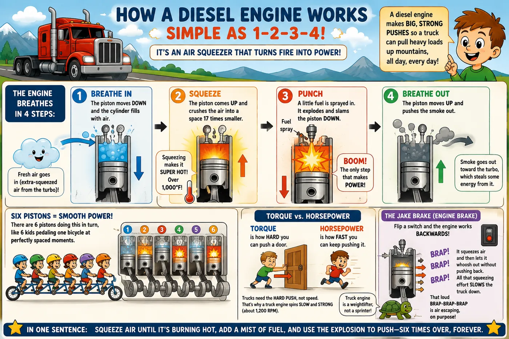
In an inline-six, the six pistons naturally cancel each other's shaking — the engine balances itself, no extra parts needed. It is also simple: one head, one exhaust pipe, one turbo. And its long piston stroke makes huge twisting force at low speed. Torque is what moves freight; horsepower is just torque × speed. A DD15 or X15 earns its living between 1,000 and 1,500 RPM — exactly where this engine is happiest.
Anatomy: the parts that matter
The rotating assembly
- Block — the cast-iron foundation everything bolts to. Cummins engines use replaceable cylinder sleeves ("wet liners") with coolant touching their outer walls; Detroit bores its cylinders into the block itself. Wet liners are why in-frame overhauls exist: liners, pistons, and bearings can all be renewed with the engine still in the truck.
- Crankshaft — forged steel, rides on seven main bearings. Converts the linear hammer-blows of the pistons into rotation. It never touches its bearings when healthy — it floats on a pressurized oil film about the thickness of a human hair.
- Connecting rods & pistons — modern HD pistons are often two-piece steel or monosteel, with a bowl in the crown that shapes the combustion event. Oil squirters underneath spray the piston crown constantly to keep it alive.
- Rings — top compression ring seals combustion, second ring backs it up, oil control ring scrapes the cylinder wall. Nearly all "oil consumption" complaints live here or in the turbo.
The top end
- Cylinder head — one massive casting carrying four valves per cylinder, the injectors dead-center over each piston bowl, and coolant passages everywhere.
- Camshaft & overhead — an overhead cam (Detroit: dual; Cummins X15: single overhead cam) drives intake valves, exhaust valves, and on many designs the engine brake rocker. Valve lash — the tiny cold clearance between rocker and valve — is a wear item, which is why an overhead run (valve adjustment) is scheduled maintenance, not a repair.
- Head gasket — a multi-layer steel fire ring sealing 2,500+ psi of combustion away from coolant passages an eighth of an inch away. When it fails, combustion gas pushes into coolant long before coolant enters the cylinder — which is why the first sign is usually a pressurized, puking coolant tank, not white smoke.
Timing — the dance that must never slip
The valves are doors, and the pistons are visitors arriving thousands of times a minute. The doors must open at the exact moment each piston arrives — not before, not after. The crankshaft (which moves pistons) and the camshaft (which opens doors) are locked together by timing gears with alignment marks, so they can never drift apart. Assemble them one tooth off, and every door in the engine opens at the wrong moment: weak, smoky running at best — pistons smashing into open valves at worst. This is why timing marks exist, and why they are checked and double-checked at every rebuild.
Heavy diesels use gears, not belts, to tie crank to cam — million-mile steel that never stretches or snaps like a car’s timing belt. The overhead run (valve adjustment) protects the other half of the door system: lash is how far each door opens and how long it stays open. Too tight and a valve never fully closes — it burns. Too loose and the door opens late and small — weak cylinder, noisy top end. The dance has two requirements: right moment (timing gears) and right movement (lash). Scheduled maintenance guards both.
Torque, horsepower, and why diesels are geared the way they are
Torque is twisting force; horsepower is how fast you can apply it (HP = torque × RPM ÷ 5,252). A typical fleet spec — say 455 HP / 1,650 lb-ft — makes peak torque around 1,000–1,100 RPM and holds it flat across a wide plateau. The whole drivetrain is designed to keep the engine in that plateau: this is the "sweet spot" and it's where fuel economy lives. Lugging below roughly 950 RPM under load hammers the bearings and overheats pistons; revving past 1,600 just burns fuel to make noise.
The engine brake — how compression release works
A "Jake brake" turns the engine into an air compressor that wastes energy on purpose. The trick: it opens the exhaust valves right at the top of the squeeze — so the air the piston worked so hard to compress simply escapes, instead of pushing the piston back down. All that squeezing effort gets thrown away as heat and noise — and throwing away effort is exactly what slows the truck. That famous bark IS the escaping air. Modern engines integrate it into the overhead (Jacobs-type rockers) and can generate 400–600+ braking horsepower — often more retarding power at high RPM than the engine makes pulling.
An engine brake that's weak on one or two cylinders is almost always overhead adjustment — the brake lash is a separate spec from valve lash and gets set at the same overhead run. Weak Jake + miss at idle + overdue overhead = you already know the fix.
What kills engines
Dust-out
Any breach in the intake tract after the filter — a cracked boot, an over-serviced filter, a missing clamp — lets abrasive dust eat the ring pack in as little as 20,000 miles. Verified by an oil sample high in silicon.
Fuel dilution
Leaking injector cups/seals or excessive idle regens wash fuel past the rings into the oil. Diesel-thinned oil loses film strength and the bearings pay for it.
Coolant in oil
Failed EGR cooler, injector cup, liner crevice seal, or head gasket. Glycol is one of the most destructive things that can enter a crankcase — it cooks into abrasive sludge in the bearings.
Overheat / overfuel
Heat is the ultimate enemy. A single serious overheat event can crack a head or scuff every liner; chasing power with a tune the cooling system was never sized for does the same, just slower.
Air Intake & Turbocharging
A diesel is an air pump that happens to burn fuel. Power is limited by how much air you can cram into the cylinder — which is why the air system is where most "low power" complaints actually live.
Fire needs air. More air = a bigger fire = more power. The turbo is a little windmill that sits in the exhaust smoke: the smoke spins it, and it spins a fan that pushes extra air into the engine. Free power, made from smoke that was leaving anyway! The charge-air cooler is a radiator that cools this air down, because cool air is "thicker" and more of it fits inside. When a truck feels weak, the first question is almost always: is the air leaking out of a hose somewhere?
Read the full simple story
The problem: fuel cannot burn without air — about 14 buckets of air for every 1 bucket of fuel. A big engine is hungry, and just sucking air through a hole isn’t enough. Someone has to PUSH air in.
How it works — follow the air like a marble through the pipes:
- The nose (air filter). All air comes in through a filter that catches dust. Dust in an engine is like sand in your teeth — it grinds everything away.
- The windmill (turbo). The exhaust smoke leaving the engine is fast and hot — that is wasted energy. So we put a windmill in the smoke’s path. The smoke spins it up to 130,000 times a minute, and it spins a fan on the other end that PUSHES fresh air into the engine. Free extra power, paid for with smoke.
- The chiller (charge-air cooler). Squeezing air makes it hot, and hot air is thin — fewer oxygen bits fit in the cylinder. So the pushed air goes through a radiator at the front of the truck to cool down and get "thick" again.
- Into the engine, and back out through the windmill again. Round and round.
The smart windmill: the VGT turbo has adjustable blinds around it. Nearly closed = the smoke squirts through fast and spins it quickly (good at low speed). Wide open = lots of flow without over-spinning (good at high speed). A little electric motor moves the blinds — and soot loves to jam them. That little motor is one of the most-replaced parts on modern trucks.
Why the truck feels weak: if a hose or clamp leaks, the pushed air escapes before reaching the engine. The computer sprays fuel expecting air that never arrives — so you get black smoke, heat, and no power. The leak even paints itself: look for black soot streaks at hose joints.
In one sentence: a windmill in the smoke pushes extra air into the engine — and when the truck is weak, check for escaped air before anything expensive.
The air path, end to end
COMPRESSORSqueezes air to 20–40 psi boost; heats it to 300–400°F
COOLERCools boost air back toward ambient — denser air, more oxygen
MANIFOLDMixes in metered EGR gas, feeds the cylinders
+ TURBINEExhaust energy spins the turbo up to 130,000 RPM
How a turbocharger works — and why
Roughly a third of the fuel's energy leaves a naturally-aspirated engine as hot, fast exhaust gas — pure waste. A turbo puts a turbine wheel in that exhaust stream and connects it by a shaft to a compressor wheel in the intake. Waste heat becomes boost. The shaft floats on engine-oil journal bearings, spinning up to 130,000 RPM at exhaust temperatures over 1,200°F — it is simultaneously the fastest and one of the hottest-running components on the truck, and it survives only because of a constant supply of clean oil.
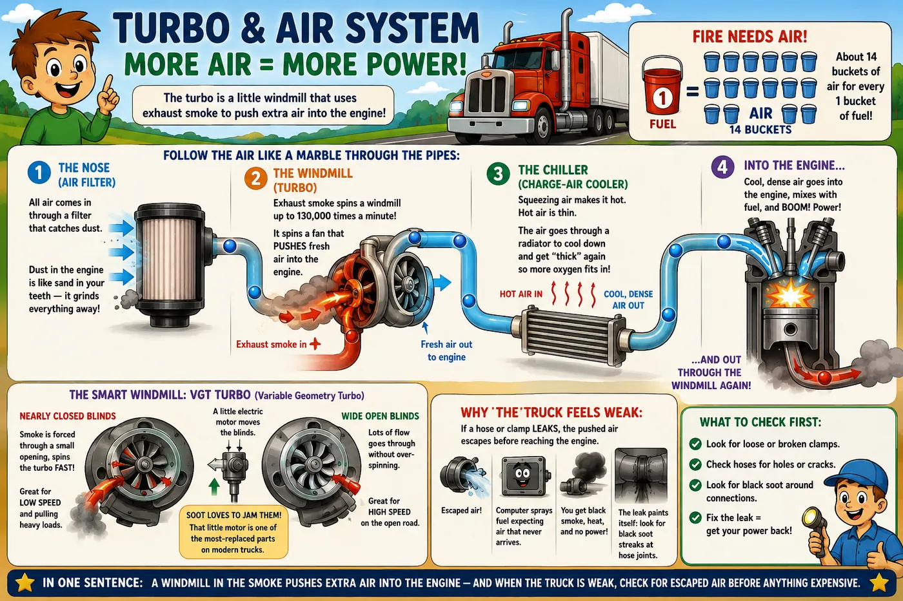
Power is simply fuel burned per second — and fuel can only burn if there is enough air: about 14.5 parts of air for every 1 part of diesel. Pack twice the air into the cylinder, and you can burn nearly twice the fuel in the same engine. Boost is like getting a bigger engine for free, paid for with smoke energy that was leaving anyway. The charge-air cooler finishes the trick: squeezing air makes it hot, and hot air is thin — cooling it back down packs ~15–20% more oxygen into the same space. A cooler burn also makes less NOx and is easier on the pistons.
The VGT — variable geometry turbo
A simple fixed-size turbo is always a compromise: build it big and it's lazy at low speed; build it small and it chokes the engine up top. The VGT fixes this with a ring of movable blinds around the turbine (Cummins uses a sliding ring — same idea). At low speed the blinds close: the exhaust squirts through a small opening, moves fast, and spins the turbo instantly. At high speed they open wide so boost doesn't run away. A small electric motor moves the blinds on the computer's orders — and it actually has three jobs: building boost, making the back-pressure that pushes EGR gas around, and helping the exhaust brake.
The VGT actuator is one of the highest-replacement-rate parts on both the X15 and DD platforms. Soot and heat seize the vane mechanism; the actuator faults when it can't reach commanded position. Before condemning the actuator, check that the vanes move freely — a new actuator bolted to a carboned-up turbo dies young. Many faults also trace to the actuator's harness and connector. Actuators typically require a calibration routine with software after installation.
Measuring the air system like a pro
| Check | Tool / Method | Healthy Value | What Failure Looks Like |
|---|---|---|---|
| Filter restriction | Filter minder / magnehelic gauge at full load | < 20–25 in-H₂O | Gauge locks red; low power at high RPM, black smoke |
| Boost pressure | Scan tool vs. dash spec under full load pull | 20–40 psi (spec varies) | Low boost = leak, lazy VGT, worn turbo; codes for underboost |
| Charge-air cooler leakage | Pressure test: cap CAC, apply ~30 psi shop air | Loses < 5 psi in 15 sec | Faster loss = leaking CAC or boots; power loss + high EGTs |
| Turbo shaft play | Fingers on the compressor wheel, inlet boot off | Slight radial, near-zero axial | Wheel rubbing housing, oil in housing = bearing failure |
| Exhaust restriction | Back-pressure reading via DPF ΔP sensor data | Per OEM table | High ΔP = plugged DPF choking the turbo |
Low power with no fault codes is a boost leak until proven otherwise. Soot streaks at CAC boots and clamps are the tell — charge air leaking out carries a little soot from EGR mixing and paints the leak black. A $150 CAC test kit pays for itself the first afternoon you don't spend chasing injectors.
Common failures
Boost / charge-air leaks
Boots, clamps, CAC end tanks. The engine fuels to a boost map it can't reach; EGTs climb because the mixture runs rich of target.
Turbo bearing failure
Caused by oil starvation, dirty oil, or hot shutdowns that coke the oil in the center section. Let a worked engine idle 2–3 minutes before shutdown.
Seized VGT vanes
Soot packing from excessive idling and short-haul duty. Some can be exercised free with software commands; badly coked units need the turbo.
Intake tract breach (dust-out)
Cracked intake boot or badly seated filter. Kills the ring pack in tens of thousands of miles. Check the filter seal and clamp torque every service.
The Fuel System
Modern diesels meter fuel with the precision of a lab instrument at pressures that cut skin. Understand the low side and the high side and every fuel complaint becomes a two-question diagnosis.
Think of it like the truck’s heart and blood. The tank holds the fuel, the filters are the kidneys that clean it, the pump is the heart that squeezes it unbelievably hard, and the injectors are tiny spray bottles that turn fuel into a fine mist — because mist burns great and puddles burn badly. The fuel system has three enemies: dirt, water, and air bubbles. Almost every fuel problem is one of those three sneaking in.
Read the full simple story
The problem: fuel only burns well as a fine mist — like hairspray, not like a water gun. Making mist takes crazy pressure, and crazy pressure needs perfectly clean fuel.
How it works — the fuel’s journey:
- The tank holds it. Keep tanks fairly full — a half-empty tank sweats water inside like a cold soda can.
- The first filter catches big dirt and separates water (water sinks under fuel, like oil and vinegar). There is a little drain — open it weekly, pour out the water. 30 seconds. Saves thousands.
- A small pump gently moves fuel forward, then a second, finer filter cleans it again.
- The big pump squeezes it to around 30,000 psi — that is like the weight of ten cars pressing on your thumbnail.
- The rail is a pipe that holds this squeezed fuel, like a water tower feeding all the houses on a street.
- The injectors are computer-controlled spray bottles, one per cylinder, firing several tiny squirts per explosion through holes thinner than a hair.
The three enemies, and what they do: Dirt scratches the tiny parts — one grain of sand is a boulder to an injector. Water rusts steel, and worse: at the hot injector tip it flashes into steam and pops the tip off like popcorn. Air makes bubbles — the pump ends up pumping foam, and the engine stumbles.
A story you will meet: the truck starts hard in the morning but fine when warm. That is fuel sneaking backwards to the tank overnight through a tiny air leak — like a straw losing its suction. The fix is usually a cheap o-ring, not expensive injectors.
One golden rule: never pour DEF (the blue-cap liquid) into the fuel tank. It destroys the whole fuel system in minutes. Teach every driver. Twice.
In one sentence: clean the fuel twice, squeeze it incredibly hard, spray it as mist — and keep dirt, water, and air bubbles out at all costs.
The circuit
WATER SEPARATOR10–30 micron; protects the pump; often with hand primer & WIF sensor
PUMPGear pump; builds 60–150 psi supply
PUMPBuilds rail pressure — up to ~35,000 psi and beyond
INJECTORSECM-timed events, multiple injections per cycle
Fuel is also the system's coolant and lubricant — far more fuel circulates than burns, carrying heat away from the injectors and pump. That's why running tanks near empty on a hot day can overheat fuel and soften rail pressure, and why every precision part in this system dies from the same three poisons: dirt, water, and air.
High-pressure common rail — how and why
Older engines built injection pressure with the camshaft — one mechanical push per cycle, take it or leave it. Common rail separated the two jobs. One pump keeps a shared pipe (the rail — "common" to all injectors) at whatever pressure the computer wants, all the time. Each injector is then just a fast electric valve that can open several times per explosion: a tiny first squirt to soften the bang, the main squirt, and small late squirts that help the exhaust-cleaning system do its work.
Atomization is everything. Fuel only burns at its surface, so the finer the droplets, the faster and cleaner the burn. Pressure is what tears fuel into mist — at 30,000+ psi through injector holes thinner than a human hair, droplets are measured in microns and combustion completes before the piston has moved far. Fine atomization = more work per gallon, less soot, quieter engine. The pilot injection alone is why a modern X15 sounds like a sewing machine next to a 1995 N14.
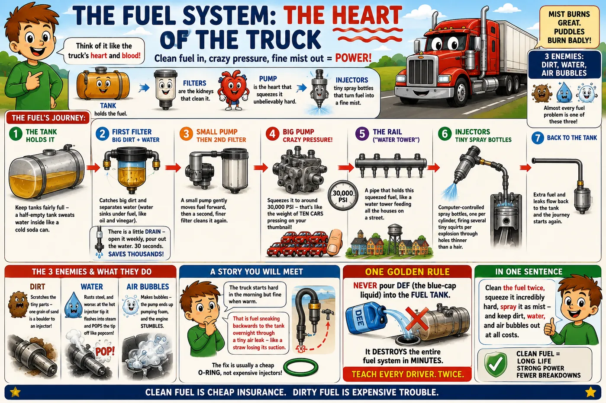
Never crack a high-pressure line on a running engine and never put your hand near a suspected rail leak. At these pressures a fuel jet injects through skin — a fuel injection injury is a surgical emergency. Diagnose the high side with sensors and scan data, not fingers.
Injectors — the precision heart
Each injector is a solenoid- or piezo-actuated needle valve with spray holes machined to micron tolerances. The ECM knows each injector's personality — that's the trim/calibration code printed on the body that must be programmed in when you replace one. Skip the code and the engine will run, but fueling is off enough to hurt smoothness, emissions, and cylinder balance readings.
Judging injectors with data, not guesses
- Cylinder cutout test — the ECM kills one cylinder at a time; the cylinder that changes nothing when cut was already dead.
- Cylinder balance / smoothness values — the ECM constantly trims each cylinder to keep the crank smooth; a cylinder holding max trim is weak (injector, or compression — verify which).
- Fuel rate vs. spec & rail pressure stability — rail pressure sagging under demand points to supply, pump, or a leaking injector dumping to return.
- Return-flow (leak-off) test — an injector with eroded internals returns far more fuel than its brothers; measured with graduated cylinders on the return ports where applicable.
The three poisons
Dirt
A 5-micron particle is a boulder to an injector seat. Causes: bad fuel, sloppy filter changes (never pre-fill the clean side), rusty tanks. Result: eroded seats, sticking needles, scored pump plungers.
Water
Rusts precision steel, flashes to steam at the injector tip and blows the tip off, breeds microbial growth ("algae") that slimes filters. The water separator drain is a 30-second weekly job that saves five-figure repairs.
Air
Enters on the suction side through chafed lines, bad primer pumps, loose filter caps, pickup tube o-rings. Symptoms: long crank after sitting overnight, stumble under load, erratic rail pressure. Find it with a clear sight-glass line or vacuum gauge on the suction side.
Hard start after sitting overnight but fires right up warm = air intrusion or a check valve bleeding down — fuel drained back to the tank. Before parts: loosen nothing, crank, and watch rail pressure build time on the laptop. Then pressurize the suction side (5–7 psi, no more) with a tank-cap adapter and look for weeps. Nine out of ten times it's a primary filter housing o-ring, hand-primer, or a suction line fitting.
Fuel quality, winter, and biodiesel
Gelling: Diesel contains paraffin wax that crystallizes in the cold — cloud point around 10–20°F for untreated #2. Wax plates the filters first, so a winter no-power/no-start with a slimy translucent film on the filter is gelling, not a mechanical fault. Prevention: winter blend (#1/#2 mix), anti-gel additive dosed before the cold snap, and filter changes going into winter, since a half-plugged filter gels first.
Biodiesel (B5–B20): a solvent that dissolves years of tank varnish and sends it straight to your filters when a truck first switches over — expect a short round of early filter changes. It also holds more water and grows microbes faster; keep tanks full to fight condensation, treat with biocide when there's evidence of growth.
DEF in the fuel tank is a catastrophic mis-fill: DEF is corrosive urea-water and destroys the entire fuel system in minutes of running. If it's caught before start: don't start it, drain everything. If it ran: the truck needs tanks, lines, pump, rail, and injectors. Train every driver on this one.
Common failures
Rail pressure faults under load
Sequence: filters (restriction), suction-side air, transfer pump output, pressure relief valve weeping, then HP pump/injector return excess. Cheap to expensive, always in that order.
Injector cup / seal leak (into coolant or cylinder)
The injector sleeve seals fuel and combustion away from the head's coolant jackets. A classic ISX-era pattern; verified by fuel sheen in the surge tank.
Fuel dilution of engine oil
Dribbling injector, cracked injector body, or excessive parked-regen post-injection wash. Find the cylinder with cutout + smoothness data.
Microbial contamination
Grows at the fuel/water interface in tanks. Fix the water problem first, then biocide, then a round of filters — otherwise it returns.
Lubrication
Oil isn't just slippery — it's the engine's bearing surface, coolant, cleaner, and messenger. A $30 oil sample tells you more about an engine's future than any other test in the shop.
Oil is the engine’s blood — but it is also a magic cushion. Inside the engine, spinning metal parts never actually touch each other: they float on a super-thin layer of oil, thinner than a hair. If the oil gets thin, dirty, or low, the metal touches metal — and that is how engines die. And just like a doctor tests your blood, we send a spoonful of oil to a lab, and it tells us what is wearing out before it breaks.
Read the full simple story
The problem: inside the engine, metal spins against metal thousands of times a minute. Metal touching metal at that speed dies in seconds. Something must keep them apart.
How it works — oil has four jobs:
- The cushion. The spinning parts actually FLOAT on a layer of oil thinner than a hair. They never touch. It works like a boat aquaplaning on water — the spinning drags oil into the gap and the pressure lifts the part. This is the most important job.
- The cleaner. Oil contains soap-like helpers that grab soot and acid and hold them until the filter or the oil change takes them away. This is why oil turns black — black oil is oil DOING its job.
- The cooler. Little nozzles spray oil at the bottom of each piston, like squirting water on something hot.
- The messenger. Oil touches every part, so it carries the evidence. A $30 lab test of your oil is a blood test for the engine: iron dust means parts wearing, glycol means coolant leaking in, fuel smell means an injector dripping. The lab sees the problem months before you hear it.
Reading the oil pressure gauge like a pro: the pump pushes a fixed amount of oil; pressure is just how hard it is to push it through all the small gaps. When parts wear, the gaps grow, and oil escapes easily — so low pressure at hot idle (thin oil, slow pump) is the engine whispering "my cushions are wearing out."
Why oil changes exist even when oil "looks fine": the soap gets used up. Like a sponge that is full — it still looks like a sponge, but it can’t hold any more dirt.
In one sentence: the parts float on oil and never touch — keep the oil clean, keep it full, and test a spoonful to hear the engine talk.
What oil actually does
- It IS the bearing. Crank journals never touch their bearing shells in a healthy engine — they hydroplane on a pressurized oil wedge (hydrodynamic lubrication). Metal touches metal only at startup and during failure.
- It cools the pistons. Oil jets under each piston spray the crown continuously. On many engines oil removes a third of the heat the coolant doesn't see.
- It cleans and suspends. Detergents and dispersants hold soot and combustion acids in suspension until the filter or the drain removes them. This is what "additive package" mostly means — and it depletes, which is why intervals exist even when oil "looks fine."
- It seals. The ring-to-liner seal is completed by an oil film.
The circuit
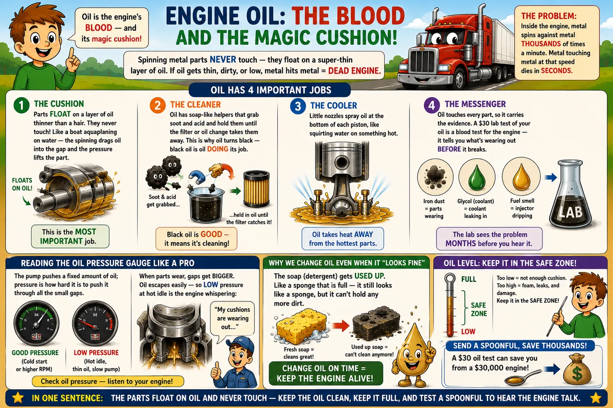
The pump pushes the same amount of oil with every turn. Pressure is simply how hard that oil must fight to squeeze through the engine's tiny gaps. As bearings wear, the gaps grow — oil escapes through them easily, and pressure falls. That's why hot idle is the moment of truth: the oil is thin and the pump is turning slowly, so worn gaps show themselves first. Low pressure at hot idle but normal at speed = bearings wearing. Low pressure everywhere = pump, relief valve, suction problem, or fuel-thinned oil. And never trust the dash gauge on a low-pressure complaint — screw a real mechanical gauge into the port and know.
Oil specs: CK-4 vs FA-4, and viscosity
15W-40 CK-4 is the standard fleet oil. 10W-30 FA-4 is a thinner oil made for 2017+ engines — it saves about 1–2% fuel, but its thinner film is designed for the tight gaps of new engines and can be wrong for older ones. That is why fleets with old and new trucks often run CK-4 in everything: one drum, no costly mistakes. Reading the label: "15W" is how the oil flows when cold (W = winter); "40" is how thick it stays when hot. Synthetic oil buys better cold starts and confidence at long intervals — it does not make an engine immune to soot or fuel dilution.
Oil analysis — reading the engine's bloodwork
| Marker | Points To | The Story It Tells |
|---|---|---|
| Iron (Fe) | Liners, cam, crank, gears | General wear metal; trend matters more than any single number |
| Copper / Lead (Cu/Pb) | Bearing shells | Rising together = bearing overlay wearing through; act before the knock |
| Aluminum (Al) | Pistons, some bearings | With iron: piston scuff. Alone: thrust washers or cooler debris |
| Chromium (Cr) | Rings | Paired with silicon = dust-out wearing the ring pack |
| Silicon (Si) | Dirt ingestion | The smoking gun for intake leaks; also spikes after sloppy top-offs or fresh gasket sealant |
| Potassium / Sodium (K/Na) | Coolant intrusion | Glycol markers — EGR cooler, injector cup, liner seal, head gasket |
| Fuel % | Injectors / regen strategy | >3–4% dilution thins the film; find the source, don't just drain |
| Soot % | Combustion & EGR health | High soot = rings, over-fueling, lazy EGR, or stretched intervals |
| TBN / Oxidation | Additive life | TBN falling toward 3–4 = acid-neutralizing reserve is spent; interval too long for this duty cycle |
Sample every truck, every drain, same lab — the value is in the trend line, not the snapshot. A truck whose iron doubles between samples at the same interval is talking to you. And take the sample mid-stream from the drain or a pump through the dipstick tube, hot — a cold pan-bottom sample reads like a horror novel and means nothing.
Blow-by and the crankcase
Some combustion gas always escapes past the rings into the crankcase — that's blow-by, and its volume is the classic field gauge of ring/liner health. Modern engines route it through a crankcase ventilation separator (open or closed) that strips the oil mist. Rising crankcase pressure shows up as oil pushed out the dipstick tube, seals weeping everywhere, and a puffing breather. Measure it with a manometer against spec before calling an engine tired — a plugged separator fakes the same symptoms for a fraction of the cost.
Oil consumption diagnosis — the order of operations
- Verify the rate. Quarts per mile, measured, not driver folklore. A quart in 1,500–2,500 miles is normal for many engines at mid-life.
- Check for leaks first. A main seal or a wet pan gasket at 80 mph aerosols an amazing amount of oil.
- Turbo: pull the boots — oil pooled in the compressor housing beyond a light film means the turbo is eating it.
- Crankcase pressure / blow-by test: quantifies the ring pack without teardown.
- Oil analysis: silicon says dust-out; chrome says rings; clean sample + high blow-by says liner glaze or cracked piston.
The Cooling System
A working engine turns a third of its fuel into heat the pistons can't use. The cooling system's job is to reject a furnace's worth of heat continuously — while keeping the engine hot enough, because a cold diesel is an unhappy, inefficient, sludge-making diesel.
A working engine makes as much heat as a house fire, all day long. The coolant (special water with antifreeze) is a bucket brigade: it picks up heat from the engine and carries it to the radiator, where the wind and the fan blow it away. The radiator cap is like the lid on a pressure cooker — it squeezes the system so the water cannot boil. A broken $15 cap can kill a $30,000 engine. That is not a joke; it is physics.
Read the full simple story
The problem: a working engine makes as much heat as a burning house, nonstop. Without cooling, it destroys itself in minutes. But here is the twist — the engine also NEEDS to be hot (about 190°F) to run right. So the system’s real job is keeping the temperature just right, like a thermostat in your house.
How it works — a bucket brigade:
- The pump pushes coolant (water + antifreeze) through tunnels inside the engine. The coolant picks up heat like a bucket picking up water.
- The doorkeeper (thermostat) is a valve. Engine cold? Door closed — coolant just loops around inside so the engine warms up fast. Engine hot? Door opens — coolant flows to the radiator.
- The radiator is where the heat leaves: wind blows through thin fins and carries the heat away. Not enough wind (slow, hot day, heavy pull)? The fan switches on — and a big truck fan takes real muscle, which is why you can hear it roar.
- The pressure-cooker lid (radiator cap). Squeezed water can get hotter than 212°F without boiling. The cap squeezes the whole system so it can safely run hot. A tired $15 cap lets the coolant boil at the hottest spots — and boiling coolant cannot carry heat, so metal cooks. Cheapest part, biggest damage.
The detective story — coolant disappears but no puddle: coolant never just evaporates. It has exactly four hiding places: out the overflow (bad cap or gas pushing in), into the oil (looks like a milkshake under the cap), into the cylinder (white sweet-smelling smoke from the stack), or into the cab’s heater (sweet fog inside the windshield). Find which door it used, and you’ve found the broken part. On modern trucks, suspect the EGR cooler first — it is the #1 secret coolant thief.
In one sentence: coolant carries the fire’s heat to the radiator, the thermostat keeps things just-right warm, and the humble cap keeps it all from boiling.
The circuit
JACKETSPicks up heat from liners, valve bridges, injector bores
OIL COOLERThe two big secondary heat loads on a modern engine
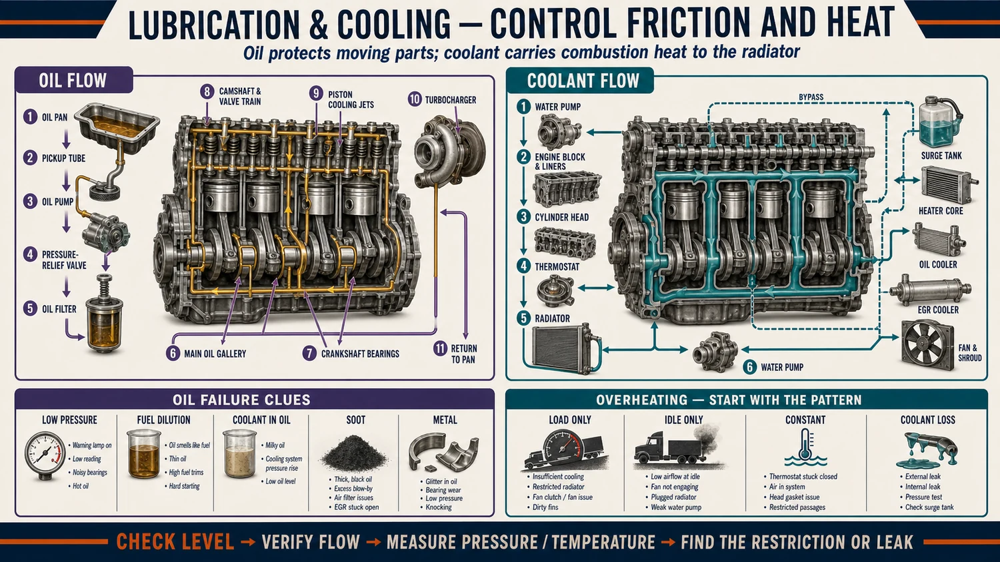
Water boils at 212°F — but squeeze it, and it can stay liquid while hotter: every psi of pressure adds about 3°F to the boiling point. A 15-psi cap plus antifreeze pushes boiling past 265°F. Why does that matter? The hottest spots inside the engine run hotter than the gauge ever shows — and if coolant boils there, the steam bubbles block the cooling exactly where it is needed most, and the metal cooks. This is why a bad $15 cap can kill a $30,000 engine while the dash gauge still reads "normal."
Coolant chemistry — the part everyone skips
Coolant is a chemical package, not colored water. Ethylene glycol handles freeze/boil; the inhibitor package protects the metal:
- Conventional coolant needs its protection additive (SCA, checked with a cheap test strip) kept up. Why: every explosion makes the cylinder liner vibrate like a struck bell. The vibration makes tiny bubbles in the coolant — and when each bubble collapses against the liner wall, it hits like a microscopic hammer. Millions of hits later, they drill pinholes straight through the liner into the oil. This is cavitation, and the additive forms a sacrificial skin on the metal that takes the beating instead.
- OAT/NOAT extended-life coolant (what nearly all modern fleets run) uses organic acids that protect for 300k–600k+ miles with minimal upkeep — but mixing coolant families degrades both packages. A fleet with mixed coolants effectively has no coolant program. Pick one, stock one, label the trucks.
- Test, don't guess: refractometer for freeze point (target −34°F at 50/50), strips for nitrite/pH on conventional. Overconcentrated glycol (>60%) actually transfers heat worse — more antifreeze is not better.
Overheat diagnosis — the veteran's sequence
- Is it real? Verify with an infrared gun at the thermostat housing vs. the dash reading. Sensors lie.
- When does it overheat? Loaded pull only = airflow/heat-rejection problem (fan clutch, plugged radiator fins, winterfront left on, bugged CAC stacking heat). At idle too = flow problem (pump, thermostat) or false reading.
- Coolant level & concentration — low coolant aerates the pump and gauges read erratic; check for where it went, because coolant doesn't evaporate.
- Fan clutch — commanded on, does it lock? On-off clutches should roar; viscous units are judged by temp response. A slipping fan hides all summer and shows up on the first mountain.
- Thermostat — cheap, critical: stuck closed overheats fast; stuck open means it never reaches temp (bad fuel economy, sludge, cab heat complaints).
- Combustion gas in coolant — block tester (chemical turns yellow) or watch for the surge tank pressurizing instantly on cold start: head gasket, EGR cooler, injector cup, cracked head.
- External: fin blockage between radiator/CAC/condenser sandwich — trucks pull a landscape's worth of debris into that stack.
Unexplained coolant loss with no puddle has exactly four hiding places: out the overflow from a failing cap or combustion gas pressurizing the system, into the oil (check for milkshake and K/Na in the sample), into the cylinder (white sweet-smelling smoke, usually EGR cooler on modern trucks), or into the transmission/fuel via a cooler. The EGR cooler is the #1 suspect on any EPA10+ engine — pressure-test it before touching the head gasket.
Common failures
EGR cooler internal leak
Thousands of thermal cycles crack the internal tubes/plates. Coolant enters the exhaust stream (steam out the stack) or exhaust enters the coolant. The signature modern-engine coolant failure.
Water pump seal weep
The weep hole exists to warn you — a drip that dries is normal aging; a steady leak means the seal is done. Catch it before the bearing lets the impeller eat the housing.
Radiator fin rot / debris
Fin material corrodes and folds; the core flows coolant fine but can't reject heat. Backflush the sandwich annually; straighten fins; don't pressure-wash fins flat.
Air in the system
After any repair, follow the OEM fill/vent procedure — big engines trap air pockets that airlock the heater core and fake overheats. Vacuum-fill tools pay for themselves.
Fan clutch / fan hub failure
The hub bearing and its seal are wear items: a leaking hub is the early warning, a wobbling fan is the late one. A slipping clutch hides all winter and shows up on the first loaded summer pull. Catch it at the leak stage and it’s a hub; catch it late and it can take the radiator core with it.
Radiator cap failure
A cap that vents below its rating quietly burps coolant a cup at a time and lowers the whole system’s boiling point. Test it with a cap tester at every coolant service — the most-missed $15 diagnosis in cooling.
EGR & Aftertreatment
The system drivers curse and mechanics master. Emissions hardware causes more downtime than any other system on a modern truck — because it's chemistry riding on top of plumbing. Learn the chemistry and the plumbing stops being mysterious.
This is the smoke-cleaning machine bolted to the exhaust pipe. It works in three steps: first a heater section makes things hot. Then a stone sponge (DPF) catches the black dust — and when the sponge gets full, the truck burns the dust away by itself; that is a regen. Last, the truck sprays the blue-cap liquid (DEF) into the pipe, and it destroys the invisible bad gas, turning it into plain air and water. One big rule: this machine is the trash can, not the trash maker. If it fills up too fast, something in the engine is throwing too much garbage.
Read the full simple story
The problem: engine smoke has two bad things — soot (black dust, like candle smoke) and NOx (an invisible gas that makes city air dirty). The law says: not allowed anymore. So a cleaning machine is bolted after the engine. After + treatment = "clean it after."
How it works — washing dishes, three steps:
- The heater (DOC). Makes the exhaust very hot when needed — because the next steps only work hot, just like grease only washes off in hot water.
- The soot sponge (DPF). A stone sponge traps the black dust; clean air passes through. When the sponge fills up, the truck does its magic trick: soot is carbon, and carbon BURNS. The truck heats the filter until the dust burns away to nothing — that is a regen ("make it new again"). On the highway this happens by itself and nobody notices. City trucks that never get hot need a parked regen in the yard.
- The gas killer (SCR + DEF). You can’t filter an invisible gas — you kill it with chemistry. The truck sprays DEF (the blue-cap liquid) into the hot pipe; it turns into ammonia; ammonia meets NOx and they destroy each other. Out comes plain nitrogen and water — normal air.
The two rules that save fleets: First — this machine is the trash can, not the trash maker. A filter that fills up every week means the engine is throwing too much garbage (a dripping injector, a leaking hose): fix the thrower, not the can. Second — when the DEF light comes on, a legal countdown starts: warning → less power → crawling speed. The truck WILL slow itself down. Go to the shop the same week, every time.
One thing regens can’t fix: ash. Burned oil leaves a little ash that never burns away, like the gray dust left after a campfire. Every 300,000 miles or so the sponge comes off and gets professionally cleaned.
In one sentence: heat it, catch the dust and burn it, spray the blue liquid to kill the invisible gas — and if the machine complains a lot, the real problem is upstream in the engine.
The problem being solved
Burning diesel makes two bad things, and they sit on a seesaw. NOx (the invisible smog gas) is born when the fire burns very hot. Soot (the black dust — also called PM) is born when the fire burns too cool, or with too much fuel. Push one down, and the other comes up. Engineers call this the "NOx–soot tradeoff," and it trapped engine design for years.
Modern trucks escape the trap by attacking both at once. EGR keeps the fire cooler inside the engine — so less NOx is born. The DPF catches the soot that the cooler fire makes. And SCR kills whatever NOx is left, out in the pipe. Because SCR cleans up at the end, engineers can tune the engine hot and lean again — good fuel economy — and let the pipe handle the mess.
EGR — exhaust gas recirculation
The engine takes some of its own exhaust (up to about 30%), cools it in the EGR cooler, and breathes it back in through the EGR valve. Why breathe your own smoke? Because exhaust gas is already burned — it cannot burn again. Inside the cylinder it just takes up space and soaks up heat, like a wet log thrown on a fire. That keeps the flame below roughly 2,800°F — and under that line, the nitrogen in the air stays harmless instead of cooking into NOx.
NOx grows with heat very fast — cool the flame a few hundred degrees, and NOx almost disappears. But the price is real. The recycled gas drags soot into the intake (that black paste inside every modern intake manifold). The cooler dumps a big extra heat load onto the radiator. And the turbo must squeeze harder to push the gas around, which costs fuel. This is why EGR, the turbo, and the cooling system must always be diagnosed together, as one system — a problem in one shows up as symptoms in the others.
Deleting or defeating emissions systems is a federal Clean Air Act violation with per-truck fines that can reach six figures for fleets, voids warranty, and is detectable at inspection. A well-maintained aftertreatment system is genuinely reliable — nearly every "DPF horror story" traces back to an unfixed upstream problem being asked to pass through a filter.
The aftertreatment box, stage by stage
DECOMP TUBEDEF injected into hot exhaust → decomposes to ammonia
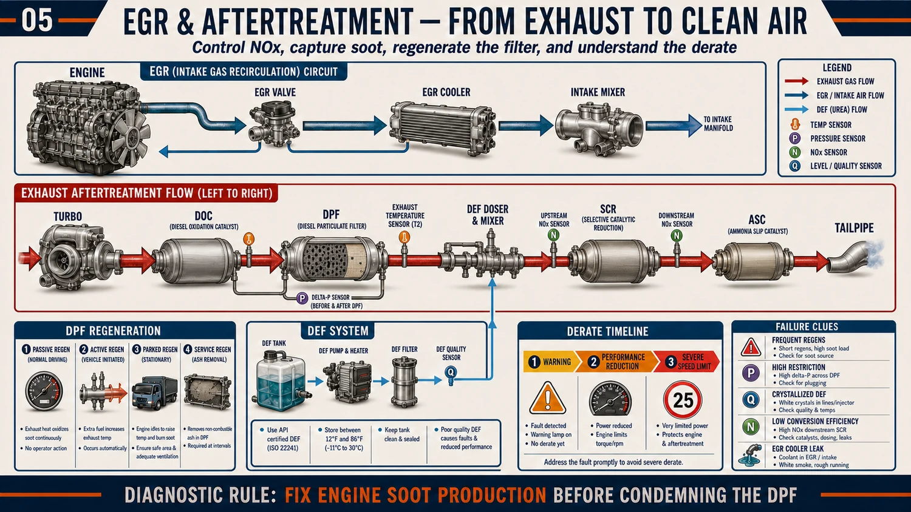
DPF and regeneration
The DPF is a stone honeycomb where every other channel is plugged — so the exhaust is forced to pass through the porous walls, and the soot stays behind, trapped. Soot is carbon, and carbon burns. Regeneration is just that: burning the trapped soot away.
- Passive regen — the free one. At normal highway temperatures (500–650°F), a special gas made by the DOC quietly burns the soot all the time. Trucks that run loaded on the highway barely notice their DPF exists.
- Active regen — the ECM injects fuel into the exhaust (late post-injection or a dedicated doser); the DOC burns it, raising DPF inlet to ~1,100°F to torch the soot. Triggered by the ΔP sensor and soot models. Normal, automatic, invisible to a driver on the highway.
- Parked/forced regen — same event, stationary, tech-initiated. Needed when duty cycle (short hauls, heavy idle, city work) never gives passive/active a chance.
Ash is the part regens can't fix. Metallic additives in engine oil don't burn — they accumulate as ash until the filter needs removal and baking/cleaning, typically every 200k–400k miles. A truck regen-ing more and more often with clean upstream systems is asking for a DPF cleaning.
SCR and DEF
DEF is simple: 32.5% urea mixed into pure water. That exact number is chosen so the liquid freezes evenly (at 12°F) instead of separating into layers. Sprayed into the hot exhaust, the urea turns into ammonia — and ammonia destroys NOx inside the SCR chamber. What comes out is nitrogen and water, the same things already in the air.
A truck drinks DEF slowly: about 2–3 gallons for every 100 gallons of diesel. Two rules keep it out of trouble. First: buy certified DEF (ISO 22241) and never add tap water — the system detects watered-down fluid and complains. Second: don’t worry when DEF freezes overnight — that is expected and normal; built-in heaters thaw it after start.
Emissions faults escalate on a federally-mandated schedule: warning lamp → 25% power derate → and if ignored long enough (or DEF runs empty), a 5-mph limp. The countdown is running whether the driver reports the lamp or not. Fleet rule: an amber DEF/emissions lamp gets a same-week shop visit, every time. A $150 sensor ignored becomes a tow bill plus a missed delivery.
Sensors — where the actual failures live
| Sensor | Job | Failure Pattern |
|---|---|---|
| NOx sensors (inlet/outlet) | Verify SCR efficiency | The #1 aftertreatment repair. Heated zirconia elements crack, age, drift; outlet sensor faults trigger "SCR efficiency" derates. Genuinely bad sensors are common — but confirm dosing & DEF quality before condemning. |
| DPF ΔP (delta-pressure) | Measures soot load across DPF | Sensing tubes soot-plug or crack → false high/low loading → runaway regens or a genuinely plugging filter ignored. |
| EGT thermistors (3–4 across the box) | Control regen temps | Drift and rationality faults; a lying EGT sensor can abort every regen and quietly load the filter. |
| DEF quality/level sensor | Detect bad or low DEF | In-tank units fail whole-assembly; contaminated DEF also reads here. |
| DEF doser valve | Meter DEF spray | Crystallizes at the tip — white buildup restricts spray pattern → poor NOx conversion. Inspect and clean at the decomp tube. |
The aftertreatment system is the engine's report card, not its problem child. A DPF that plugs every three weeks isn't a DPF problem — it's a lazy injector, a weeping turbo seal, a stuck EGR valve, or a duty cycle with no highway time. Fix the writer, not the paper. Before any DPF cleaning, always ask: why was there this much soot?
Sensors & the ECM — the Nervous System
The iron makes the power, but a computer runs the show. The ECM reads dozens of sensors many times every second, decides, and commands. Understand the nervous system and half the dashboard’s mysteries disappear.
The truck works like your body. Sensors are the eyes and nose — they watch and smell everything. The ECM is the brain — it reads the reports and decides. Injectors, turbo, fan, DEF doser are the muscles — they do what the brain says. Kid → eyes → brain → muscles. Truck → sensors → ECM → injectors. And here is the rule that saves money: every sensor is a tiny reporter asking one question all day. When a report sounds crazy, the problem is usually the wire carrying the report, not the reporter itself.
The brain: what the ECM actually controls
There are no mechanical linkages left. The pedal is a sensor — pressing it is a request, and the ECM decides how much fuel that request deserves given everything else it knows: boost, temperatures, exhaust state, altitude. Every squirt of every injector — its size, its timing, its pilot and post shots — is a fresh decision. So is the turbo’s vane angle, the EGR valve’s opening, the DEF dose, and when the fan roars. When the truck behaves strangely, ask first: what is the brain being told? Bad information produces bad decisions from a perfectly healthy brain.
Every sensor is one question
| Sensor Type | Its One Question | Where It Lives | How It Usually Fails |
|---|---|---|---|
| Temperature | “How hot am I?” | Coolant, oil, intake air (IAT), fuel, ambient, EGTs through the aftertreatment | Drifts with age, or circuit faults (FMI 3/4 = check the wire). The cold-soak compare finds liars: parked overnight, every temp sensor must read the same ambient number. |
| Pressure | “How hard am I being pushed?” | Oil, boost (MAP), fuel rail, DPF ΔP, barometric, crankcase | Soot plugs the little sensing tubes; readings freeze or go erratic. Inspect tubes before condemning sensors. |
| Position | “Where am I right now?” | Pedal, EGR valve, VGT vanes/actuator | Carbon jams the thing being measured — the sensor reports the truth about a stuck part and gets blamed for it. |
| Speed | “How fast am I spinning?” | Crankshaft, camshaft, turbo, wheels, transmission shafts | Air gap wrong after repairs, metal fuzz on the magnetic tip, chafed leads at the axle. Intermittent signals = random stalls and ghosts. |
| Level | “How much do I have?” | Coolant, DEF, fuel, oil (some engines) | Floats stick; DEF header units fail as one assembly (level + temp + quality together). |
| Chemistry | “What is in my exhaust?” | NOx sensors in and out of the SCR, DEF quality | The most-replaced smart sensors on the truck — but they have their own little computers, so verify power and ground before buying one. |
The air path’s eyes and nose
The engine cannot see air — it can only trust its reporters. MAP/boost says how hard the turbo pushes. IAT says how thick the air is (hot = thin). A MAF, where fitted, counts the air actually entering. Exhaust back-pressure says whether the exit is choking. The EGT chain tracks heat through the aftertreatment, and the NOx pair smells the exhaust before and after the SCR to prove the cleanup happened. The ECM constantly cross-checks these witnesses against each other — boost that doesn’t match vane position, or an EGT that disagrees with its neighbors, raises a rationality fault. That is why one lying sensor can light codes across three systems: the witnesses stopped agreeing.
When sensors lie — the three-step rule
- Wire first. FMI 3/4 (voltage out of range) is the circuit talking, not the part. Wiggle-test, check the connector, voltage-drop the wiring.
- Rationality second. Compare the reading against reality (IR gun vs. coolant sensor) and against its siblings (all EGTs equal at cold soak).
- Sensor last. Only after the wire and the cross-checks pass does the sensor itself earn replacement.
Many sensors share a common 5-volt reference supply from the ECM. One chafed sensor wire shorting that supply drags down every sensor on the circuit — a dozen codes at once, dash lit like a holiday. (SPN 3509/3510 in the code table.) Don’t replace twelve sensors: unplug them one at a time until the supply comes back — the last one unplugged is your culprit.
The starting system — the wake-up sequence
Read failures against this sequence and the diagnosis names itself: silence = key/interlock/relay side. Click but no spin = power delivery or starter. Slow spin = batteries and cables (Chapter 12). Strong spin but no fire = the electrical side is done — it’s fuel, air, or the crank/cam signals now (Chapter 4, and the Hard Start tree).
The most profitable sentence in this chapter: the ECM makes bad decisions from bad information long before it breaks itself. Genuine ECM failures are rare; lied-to ECMs are everyday. Feed the brain the truth — clean connectors, healthy grounds, honest sensors — and it will run the iron beautifully for a million miles.
Cummins X15 / ISX15
The most common engine in North American trucking. The ISX (through 2016) and its successor the X15 (2017+) share DNA: single overhead cam, wet liners, Holset VGT — and a very well-documented set of personalities.
Cummins is the most common big truck engine in America — like the most popular phone brand, everyone has one and everyone knows its habits. This chapter is its "personality file": the parts it is famous for breaking (camshaft pieces, fuel leaking where coolant lives, the turbo’s little control motor), and the checkups that catch these problems while they are still small and cheap.
Read the full simple story
The idea of this chapter: engines are like dog breeds. Every breed is a good dog, but every breed has its known health problems — and a smart owner knows them in advance. Cummins is the most popular breed in trucking, and here is its health file.
What to know, simply:
- Its ID card is the ESN (engine serial number, on a plate on the engine). Type it into Cummins’ free website (QuickServe) and you unlock that exact engine’s medical records: its parts, its numbers, its repair instructions. Never guess from the year on the door — engines built months apart can differ.
- Its famous weak spots: the camshaft parts up top can wear (listen for ticking, and do the scheduled "overhead" adjustment — it is like re-tuning a guitar after lots of playing); fuel can leak into the coolant through little injector seals (smell the coolant tank — fuel smell = caught it); the turbo’s little blind-mover motor jams with soot; and the smoke-cleaning sensors are frequent flyers.
- Its care schedule: oil and fuel filters on time, an oil blood-test at every change, the overhead adjustment around half a million miles, and coolant checked yearly. Boring on purpose — boring maintenance is what makes a million-mile engine.
In one sentence: know your engine’s breed, keep its ID number handy, watch its famous weak spots, and do the boring checkups on time.
Platform architecture
Identity
X15: XPI evolved
Generations you'll meet
The CM number is the ECM/controls generation — it defines the engine's behavior and its known issues far more than the model year on the door.
Known patterns, by system
Cam & valvetrain wear (ISX era, esp. CM871/CM2250)
The classic big-dollar ISX pattern: camshaft lobe and roller-follower wear, sometimes traced to oil drain intervals stretched too far for the duty cycle and overhead adjustments skipped. Defense: on-time overhead runs, religious oil sampling watching iron trend, and listening to the top end at every PM. Catch it at the rocker and it's an overhead kit; catch it late and it's a cam-in-frame plus an oil-system flush for debris.
Injector cups / fuel in coolant (ISX legacy)
Injector sleeve o-rings/cups let fuel weep into the head's coolant jackets. Confirmed by sight/smell at the surge tank and lab coolant analysis. Cup replacement is precision work — the same seat also seals combustion, so a badly installed cup shows up as coolant loss, or as combustion gas pushing into the cooling system.
EGR cooler & valve
Same story as every EGR engine but frequent enough here to check first: pressure-test the cooler whenever coolant disappears without a trace. Valves carbon up in idle-heavy duty; many can be cleaned, but a valve that faults repeatedly after cleaning has worn its position sensor or motor.
Holset VGT actuator
The electric actuator and the sliding-nozzle mechanism it drives both suffer from soot and heat. The actuator is smart (its own controller on the datalink) and must be calibrated to the turbo after replacement. Before replacing: cycle the nozzle with INSITE and feel/watch for binding — a sticky mechanism kills new actuators.
Aftertreatment sensor cascade
NOx sensors and the DEF doser dominate the fault history of the SCR-era ISX/X15. Rule: verify DEF quality (refractometer, 32.5%), inspect the doser tip for crystal buildup, confirm dosing with a service test — then trust a NOx sensor code. Cummins fault trees are excellent; follow them in order, they're written from warranty data.
Service rhythm that keeps an X15 alive
| Item | Typical Interval (linehaul) | Notes |
|---|---|---|
| Oil & filter | Up to 50k mi (X15 Efficiency, ideal duty) 25–35k typical fleet | Duty cycle rules: heavy/vocational or high-idle cuts this dramatically. Let oil analysis set the number. |
| Fuel filters (pri + sec) | Every oil change | Fill housings dry-side only; never pre-wet the clean side. |
| Overhead (valve/brake lash) | First ~500k, then per manual | The cheapest insurance on this platform given cam/follower history. |
| Coolant (OAT) | Test yearly, change ~600k/5yr | Verify concentration & inhibitors, not just level. |
| DPF cleaning | ~250–400k or by regen frequency | Sooner for idle-heavy duty. |
| Crankcase breather element | Per manual (varies by CM) | Plugged element mimics blow-by/tired engine. |
Cummins' biggest fleet advantage is data access: INSITE software plus QuickServe (free with the ESN) gives you factory fault trees, wiring diagrams, and every spec by serial number. Type the ESN into QuickServe before you touch the truck — option content varies enough that guessing from the model year will burn you.
Detroit DD13 / DD15
Daimler's workhorse — standard in Freightliner Cascadias, which means it hauls more U.S. freight than any other single engine family. Engineered around fuel economy, integration, and telematics that watch the engine for you.
Detroit is the engine inside most Freightliner trucks. Older ones (before 2017) have a clever extra windmill that recycles even more exhaust power back to the engine. Newer ones put the whole smoke-cleaning machine in one big box. Its special trick: the engine phones home — when something goes wrong, it sends a message about what hurts and how urgent it is, before the driver even calls you.
Read the full simple story
The idea: Detroit is the engine living inside most Freightliner trucks. Same diesel rules as every engine — plus three special things to remember.
- Two generations, two personalities. Older ones (before 2017) have a bonus windmill: after the turbo, a SECOND windmill catches leftover smoke-energy and gears it straight back to the engine — clever, but it is one more spinning thing that can wear out. If an old DD15 makes strange gear noises, check this before blaming the transmission. Newer ones (2017+) dropped that trick and put the whole smoke-cleaning machine into one big box under the truck.
- Two brains. One computer runs the engine, another runs the cleaning machine. They are a team and must speak the same software version — like two phones that need the same app update to message each other. Mismatched brains make "haunted truck" problems.
- It phones home. When something goes wrong, the engine sends a message to Detroit and to you: what hurts, how urgent, what it probably is. Use it! A "service now" message while the truck still rolls means you can route it to a shop on YOUR schedule instead of waiting for the breakdown to choose the time and place.
In one sentence: know which generation you have, keep its two brains matched, and listen when the engine phones home.
Platform architecture
Identity
Eras that matter
Knowing whether you're looking at a turbo-compound truck or a GHG17+ truck changes half the diagnostic map.
Known patterns, by system
Turbo-compound system (pre-2017 DD15)
The axial power turbine and its gear train recover real fuel — and add a wear system nobody else has. Bearing and coupling failures send debris through the gear train; listen for the telltale turbine whine change and watch oil samples. On any pre-2017 DD15 with "strange gear noise," think turbo-compound before transmission.
EGR cooler & related coolant loss
Same modern-engine signature: pressure-test the EGR cooler first. Detroit coolant systems also want attention at the water pump weep hole — scheduled inspection, as seepage is the designed failure warning.
Aftertreatment "one-box" & sensor set (GHG17+)
The one-box simplifies plumbing but concentrates heat and sensors in one assembly. The playbook: DEF quality → doser spray pattern → EGT/NOx sensor rationality → then hardware. The ACM logs excellent freeze-frame data; pull it before parts.
Fuel system era differences
Early amplified-rail DD15s have their own injector diagnostic logic (amplification hardware inside the injector) — follow DDDL-guided tests rather than generic common-rail intuition. GHG17+ behaves like a conventional HPCR: filters → supply → pump → injectors, in that order.
Harness chafe & connector corrosion
High-mileage Cascadias earn a reputation for chafe points at the engine harness and aftertreatment pigtails. Before any intermittent-fault parts spend: wiggle-test the harness live with DDDL data streaming and watch for dropouts.
Detroit's ace: the telematics loop
Detroit Connect / Virtual Technician reports fault events off the truck in real time with a severity call ("service now" vs "service soon") and probable cause from Detroit's database. For a fleet, this changes maintenance from reactive to planned: the truck emails you its problem before the driver calls. Use it — route "service now" events to a shop while the load is still moving, and match its fault snapshot against your own DDDL session when the truck arrives.
Service rhythm
| Item | Typical Interval (linehaul) | Notes |
|---|---|---|
| Oil & filter | Up to 50–75k efficient long-haul (FA-4) 25–45k typical mixed duty | Detroit pushed the longest intervals in the industry — but only inside the specified duty cycle and oil spec. Analysis confirms. |
| Fuel filter module | Every oil change | Water-in-fuel sensor at the module; drain weekly in wet climates. |
| Overhead (valve lash) | First check ~ per manual (long) | DOHC overhead is stable but not maintenance-free; do it when scheduled. |
| Coolant (OAT) | Test yearly; extended change interval | Never mix families; DD cooling module fin condition matters on grades. |
| DPF / one-box cleaning | ~300–400k by ash model or regen trend | ACM tracks ash estimate — read it, don't guess. |
Detroit diagnostics live in DDDL (Detroit Diesel Diagnostic Link), and the platform's two-module split matters: the MCM runs the engine, the ACM runs aftertreatment, and they must be programmed as a matched pair. A used-truck buyer's tip that doubles as a diagnostic one: mismatched or re-flashed MCM/ACM software explains many "haunted" trucks — verify software levels against the serial number early when the fault pattern makes no sense.
Air Brakes
The most safety-critical system on the truck, and the most elegant: air brakes are designed so that every failure mode ends with the brakes applied. Understand that single design principle and the whole system explains itself.
Truck brakes run on squeezed air, like a bicycle pump system. Press the pedal → air pushes → pads squeeze the wheels. But here is the genius part: giant springs are always trying to slam the brakes ON, and the air is what holds them back. So if the air ever leaks out... the springs win and the truck stops itself. A broken air brake system doesn’t mean no brakes — it means brakes locked on. It fails in the safe direction, on purpose.
Read the full simple story
The problem: a loaded truck weighs as much as 25 cars. Car-style brake fluid can’t work here — you connect and disconnect trailers all day (can’t do that with liquid hoses), and a single fluid leak would mean NO brakes. So trucks use squeezed air — and a brilliant safety trick.
How it works:
- Making air: an air pump on the engine fills tanks, like a scuba-tank compressor. A governor tells it "full, take a break" at about 125 psi.
- Drying it: squeezing air wrings water out of it, like squeezing a wet sponge. Wet air rusts tanks and freezes valves solid in winter. So the air passes through a dryer — a can of moisture-absorbing beads. That loud PSSHT you hear from a truck? That is the dryer spitting out its collected water. If you drain a tank and water pours out, the dryer cartridge is overdue.
- Using it: push the pedal → air rushes to each wheel → pushes a rod → the rod levers big pads against a drum → friction slows the wheel. There are TWO separate circuits (front and back), like two ropes holding one weight — if one breaks, the other still holds.
- The genius part — the springs: at the back wheels sit huge coiled springs that always want to SLAM the brakes on. Air pressure is what holds them back all day. Lose the air — any failure, anywhere — and the springs win: the brakes lock on and the truck stops. The system cannot fail into "no brakes." It can only fail into "brakes stuck on."
The one thing that quietly kills stopping power — adjustment. As the pads wear, the push-rod must travel farther before the pads touch the drum. Too far, and it is like a boxer punching from too far away — by the time the fist arrives, there is no power left in it. The pedal feels EXACTLY the same to the driver. That is why we measure how far each rod moves — it is the #1 thing roadside inspectors check, and now you know why.
In one sentence: squeezed, dried air holds giant springs back and pushes the pads — lose air and the truck stops itself; lose adjustment and it quietly stops stopping.
Why air, and why fail-safe
Hydraulics can't serve a combination vehicle — you can't connect and disconnect fluid lines at every trailer swap, and a single line failure would mean total brake loss. Air is free, connects with gladhands, tolerates small leaks, and enables the masterstroke: spring brakes. Massive coil springs in the rear chambers are held compressed by air pressure. Service air applies the brakes; but if the system ever loses air, the springs win and clamp the brakes on. The truck doesn't lose its brakes when air fails — it gains them, whether you like it or not.
The supply side
Compressing air concentrates its humidity into liquid water, and the compressor passes a little oil. Water + oil in the system rusts tanks, freezes valves solid in winter, and turns o-rings to mush. The dryer's desiccant bed catches it all, then uses a burst of dry stored air to purge itself each governor cut-out. Milky water at the wet tank drain = dryer cartridge overdue. A $60 cartridge yearly prevents the classic February no-release because a valve froze.
On any truck that’s new to your fleet, trace the air system end to end before you trust it. Previous owners tee in extra tanks, wet kits, and air-bag accessories — and the cheap installs tap upstream of or around the air dryer, feeding wet air into everything downstream. The tell: a tank that drains water endlessly while the wet tank stays dry, or dryer service that never seems to help. Every added air device must feed from a port after the dryer, protected by a pressure-protection valve so an accessory failure can’t bleed the brake system. A rogue tank full of water isn’t a quirk — it’s a corrosion and freeze-up machine plumbed into your brakes.
Air runs the whole truck — not just the brakes
The compressor feeds a whole family: brakes, the air-ride suspension, the driver’s bouncing seat, the transmission’s range shifter, the air horn, and the trailer. But the family has one strict dinner rule: the brakes eat first. Special guard valves cut off the accessories whenever pressure drops, so a leaking seat or horn can never starve the brakes.
- The consumers: service & parking brakes, air suspension bags, cab and seat air, the range-shift assist inside the transmission, the air horn, and the trailer supply line.
- Pressure-protection valves — the dinner-rule enforcers: each accessory circuit taps air through a valve that closes below a set pressure, reserving everything left for braking.
- One-way check valves between tanks — a failure in one circuit cannot siphon its neighbor. This is why isolating tanks during a leak hunt tells you so much.
- The safety pop-off valve on the wet tank (~150 psi) — if the governor ever fails to cut out, this valve screams and vents before something bursts. A truck popping its safety valve has a governor problem, not a valve problem.
The control side
- Treadle (foot) valve — meters air proportionally from both primary and secondary tanks to the service brakes. Pedal feel is air metering, not hydraulic pressure.
- Relay valves — the speed trick. Pushing air down the whole length of a truck takes too long, so the pedal only sends a small signal. Relay valves at each axle hear it and instantly feed the brakes from air tanks sitting right next to them. Each relay has an opening pressure ("crack pressure") — keeping those matched keeps tractor and trailer braking together, so one never does the other's work.
- Quick-release valves — dump chamber air locally on release so the brakes let go now.
- Parking control (yellow diamond) & trailer supply (red octagon) — push-pull valves controlling spring-brake hold-off air. Pull the red valve and the trailer's supply dumps → trailer spring brakes apply. Both pop out automatically if pressure falls below ~20–40 psi.
- Tractor protection valve — seals the tractor's air system if the trailer disconnects or blows a line, so a trailer failure can't drain the tractor. This is the component the "trailer breakaway" scenario is designed around.
- Gladhands — service (blue) and supply/emergency (red) couplings to the trailer, sealed by cheap rubber grommets that cause a disproportionate share of trailer air leaks.
The foundation brake — where air becomes stopping
At each wheel: the chamber's diaphragm converts air pressure to pushrod force → the slack adjuster (a lever) converts force to torque → the S-camshaft rotates, and its S-profile levers two shoes outward against the drum. A "Type 30" chamber means 30 in² of diaphragm: 100 psi × 30 in² = 3,000 lb of pushrod force, multiplied again by the slack adjuster's lever arm. Air disc brakes replace all of this with a caliper — better fade resistance and shorter stops, increasingly standard on steer axles.
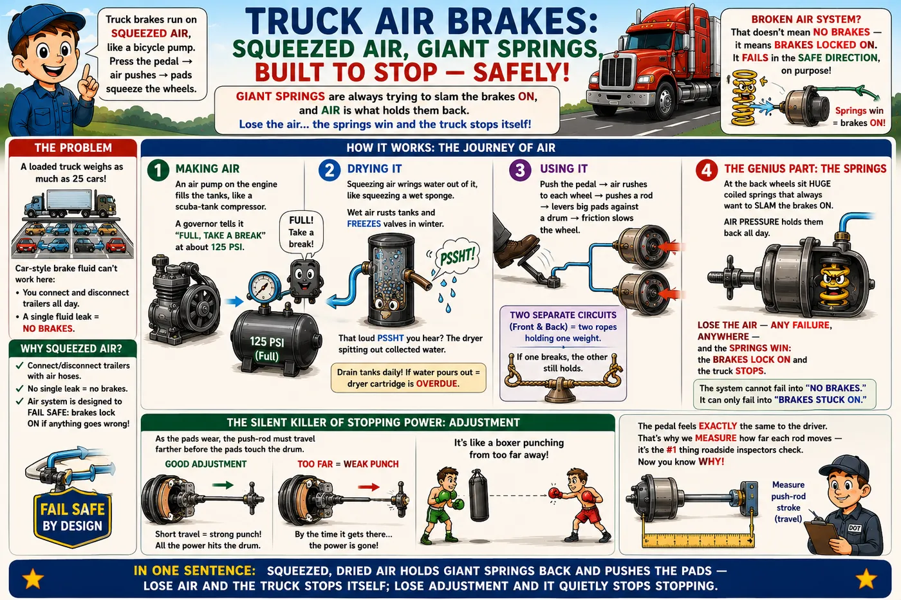
A chamber has perhaps 2.5 inches of usable stroke, and force falls off as the diaphragm nears the end of it. As shoes wear, the pushrod must travel farther before the shoes touch the drum — an out-of-adjustment brake spends its stroke on travel and arrives at the drum with almost nothing left. This is the #1 out-of-service violation in roadside inspections, and it's invisible from the driver's seat because the pedal feels identical. Automatic slack adjusters ratchet themselves tighter as shoes wear, but they fail, and a seized auto-slack is worse than a manual one because everyone assumed it was working.
Pushrod stroke limits (clamp-type chambers)
| Chamber Type | Max Stroke (applied, 90–100 psi) | Where Used |
|---|---|---|
| Type 16 | 1¾ in | Light steer axles |
| Type 20 | 1¾ in | Steer axles |
| Type 24 | 1¾ in (2 in long-stroke) | Drive/trailer axles |
| Type 30 | 2 in (2½ in long-stroke) | Drive/trailer axles — the fleet standard |
Measure with the brakes released, then applied at 90–100 psi by a helper; the difference is applied stroke. Long-stroke chambers are identified by square air ports and/or markings — know which you have before condemning.
The tests that keep you legal (and alive)
Static leak test
Full pressure, engine off, brakes released, listen and watch the gauges: loss ≤ 2 psi/min (single vehicle) or ≤ 3 psi/min (combination). Then fully applied: ≤ 3 psi/min single, ≤ 4 combination.
Governor & warning check
Pump the pedal down: low-air warning must trigger by 60 psi; spring brakes must pop out between roughly 20–45 psi. Rebuild: compressor should recover 85→100 psi in ≤ 45 sec at governed RPM (typical spec).
Applied balance check
With a helper holding 20 psi application, listen at every wheel — a dragging or silent brake shows timing/crack-pressure or foundation problems that fade one axle's linings years early.
Drum & lining inspection
Lining ≥ ¼ in on drums (OOS below), no oil-soaked linings, drums free of cracks > ¾ of the friction width, no heat-checking networks or blue spots (hot drum from dragging brake).
Finding air leaks: soap solution in a spray bottle beats every fancy tool for external leaks — hit gladhand grommets, chamber clamps, fitting threads, and valve exhaust ports. A relay or treadle valve leaking from its exhaust port while applied means the valve's internal seal is bypassing (or a chamber diaphragm is leaking back through the service line — plug lines to isolate which). And in winter, a truck that won't build air after sitting overnight almost always has ice in a line low spot or a frozen dryer purge valve — heat, drain, and replace the cartridge, don't just add alcohol forever.
ABS & stability
Wheel-speed sensors (tone ring + magnetic pickup) let the ECU release/reapply individual brakes many times per second to prevent lockup. The malfunction lamp self-tests at key-on; an ABS fault never disables base brakes. Most sensor faults are gap/adjustment (push the sensor back in against its clip after wheel-end work) or chafed leads at the axle. Post-2019 tractors add roll-stability (RSC/ESC) that can apply brakes autonomously — inspect the same sensors, they feed both systems.
Electrical & Charging
Half of all "mystery" faults on a modern truck are electrical, and half of those are a bad connection pretending to be a bad component. Learn voltage-drop testing and you will out-diagnose most of the industry.
Two things live here. First, the muscle wires: batteries push power to the starter like water through a hose — and rust in a connection is a kink in that hose; the power just can’t get through. Second, the group chat: all the truck’s computers talk to each other on one shared wire (called J1939). When that wire gets pinched, the computers stop hearing each other, and the dashboard lights up like a Christmas tree even though the parts themselves are fine.
Read the full simple story
Two systems live here — the muscles and the group chat.
The muscles: batteries store power like four friends who carry a couch together. If ONE friend is weak, the other three strain and the couch barely moves — that is why one bad battery makes the whole set act dead, and why we test each one alone and replace them as a matched team. The starter needs a river of power for a few seconds; the alternator refills the batteries while driving.
The kink test (the pro secret): think of wires as hoses. Rust inside a connection is a kink — the hose looks fine outside! An ohm-meter checks the hose with a trickle and says "fine." The voltage-drop test checks it while the river is flowing: put the meter across a section, crank the engine, and the meter shows how much push that section is stealing. More than half a volt = there is your kink. This one test beats guessing every time.
The group chat: every computer on the truck — engine, transmission, brakes, dashboard, cleaning machine — talks on ONE shared pair of wires, called J1939. Like a group chat, it needs order: there is a little "end cap" (resistor) at each end of the wire keeping the chatter clean. Pinch the wire somewhere and everyone goes silent — the dashboard panics and lights up with codes from every system at once, even though the parts are all healthy. The quick check: measure across the two wires; about 60 = healthy chat, 120 = one end cap missing, near zero = the wires are pinched together somewhere.
And when a code says a sensor’s voltage is too high or too low — that usually means the WIRING to it is hurt, not the sensor itself. Check the wire before buying the part.
In one sentence: test connections while the power is actually flowing, keep the battery team matched, and remember the computers share one group chat — hurt the wire and everyone goes quiet.
The 12-volt backbone
- Batteries — typically 3–4 × Group 31 in parallel: ~12.6 V resting when full, and it's CCA (cold-cranking amps) that starts engines: a big diesel wants 1,500–2,250+ CCA of healthy capacity. Parallel banks die as a team — one shorted cell drags its brothers down 24/7, which is why you test and replace as a set.
- Starter circuit — battery → cables → magnetic switch/relay → solenoid → motor. Hundreds of amps flow here; a single corroded lug can eat 2 volts and turn a good starter "lazy."
- Alternator — 130–320 A units; healthy charging is ~13.8–14.4 V measured at the batteries, engine at fast idle, loads on. Persistently ≥ 0.5 V difference between alternator output post and battery = cable/connection voltage drop.
- Grounds — the forgotten half of every circuit. Frame paint, corrosion at the block ground strap, and daisy-chained ring terminals cause lights that dim with turn signals, gauges that dance, and sensors that drift. Every circuit is a loop: the electrons must get back.
An ohmmeter tests a dead circuit at microamps and will call a strand-and-a-half of corroded cable "0.2 Ω — fine." Voltage-drop testing measures the circuit doing its real job under real load: meter leads across a cable or connection while cranking — any section dropping more than ~0.5 V (or ~0.2 V across a single connection) is your problem. It finds the corrosion inside crimps and the green death under insulation that resistance checks can't see. Crank the engine, walk the meter down the circuit, and the fault announces itself.
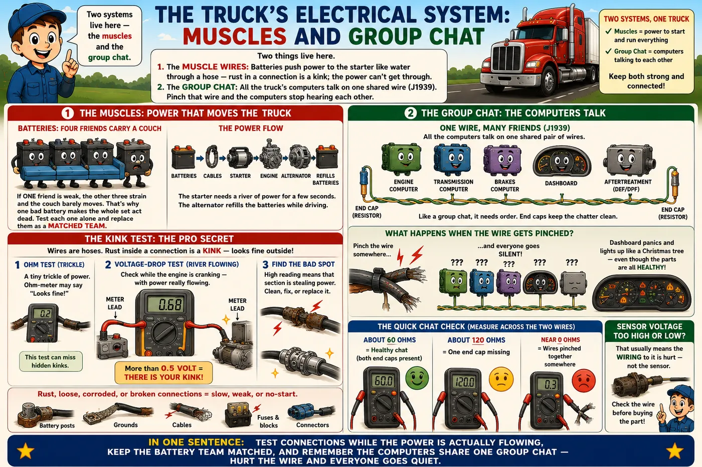
Slow-crank diagnosis in five minutes
- Battery bank voltage resting (≥12.5 V) and during crank — below ~9.5 V while cranking = weak bank or huge drop.
- Load-test or conductance-test each battery individually; one bad cell condemns the set's performance.
- Voltage drop, positive side: battery post → starter B+ terminal, while cranking. > 0.5 V = clean/replace cables & connections.
- Voltage drop, ground side: battery negative post → starter case, while cranking. Same limit — this is where most trucks fail.
- Only now condemn the starter: full voltage at the starter with slow rotation = motor's done.
The data side — J1939
Every module on the truck (ECM, transmission, ABS, dash, aftertreatment, telematics) talks on the J1939 CAN bus: a twisted pair (CAN-H/CAN-L) running the length of the chassis with a 120-Ω terminating resistor at each end. Faults are labeled by SPN (Suspect Parameter Number — what parameter) and FMI (Failure Mode Identifier — how it failed).
| FMI | Meaning | Translation |
|---|---|---|
| 0 / 1 | Data valid but too high / too low | The sensor works; the condition is real. Fix the system, not the sensor. |
| 2 | Data erratic or wrong | Rationality failure — often wiring or a drifting sensor. |
| 3 / 4 | Voltage above / below normal | Circuit problem: short to power / short to ground / open. Wiring first, sensor second. |
| 5 / 6 | Current below / above normal | Open circuit or dead short in an actuator circuit. |
| 7 | Mechanical system not responding | The electronics are fine — the hardware they command is stuck. |
| 9 / 19 | Abnormal update / network data error | The module expecting the data is fine; the sender or the bus is the problem. |
Total datalink chaos — every module offline, dash full of communication codes? Key off, measure resistance across CAN-H/CAN-L at the diagnostic connector: ~60 Ω is healthy (two 120-Ω terminators in parallel). ~120 Ω = one terminator missing / half the bus disconnected. Near 0 = pinched harness shorting the pair. And remember FMI 9: a "transmission" code on the dash cluster may just mean the cluster stopped hearing the transmission — chase the wire, not the gearbox.
Corrosion — the fleet's slow fire
Road salt + mixed metals + 12 volts = a slow chemical fire that eats wiring from the inside out. Green powder inside insulation wicks feet up a cable from a compromised end. Fleet defenses: dielectric grease in every connector you open, heat-shrink with adhesive (never bare butt-splices under the truck), battery terminal protectant, and a hard rule that any repair in the salt zone gets sealed like a boat's wiring. Chafe points to patrol on every PM: behind the cab, cross-members, spring hangers, anywhere a harness can touch steel through one winter of vibration.
Drivetrain
Between the flywheel and the pavement, torque gets multiplied roughly 15–20× in first gear. Every component in that chain is a lever — and every one has a known way of dying.
This is the path the engine’s spin takes to reach the road. The clutch is a handshake between engine and gearbox — grab and release. The transmission is a set of bicycle gears: low gears for hard pulling, high gears for fast cruising. The driveshaft is a spinning pole carrying power to the back. And the differential lets the left and right wheels spin at different speeds so the truck can turn corners without hopping.
Read the full simple story
The problem: the engine spins one way, at one speed range — but the truck needs to crawl up hills AND cruise at 65. This chapter is the chain of parts that carries and transforms that spin.
- The clutch — a handshake. Two plates press together: engine side and gearbox side. Pressed = holding hands, power flows. Pedal down = hands let go. A worn clutch is a sweaty handshake — the engine revs but the truck doesn’t pull (that is "slipping"). The little free-play at the top of the pedal matters: no free play means the parts are always half-touching, wearing out all day.
- The transmission — bicycle gears. Low gear = easy pedaling, strong pull, slow. High gear = hard pedaling, fast cruising. Modern trucks mostly use an AMT — a robot that works the clutch and picks gears better than most humans. Important secret: the robot decides using data the ENGINE sends over the group chat. So a truck that "shifts terribly" often has an engine data problem, not a gearbox problem. Fix engine codes first, always.
- The driveshaft — a spinning pole with flexible joints (u-joints) at each end so the axle can bounce while the pole spins. The two joints must be lined up like two dancers canceling each other’s wobble — if the angles are wrong or the joints are worn, you get a shake that loads when pulling and disappears when coasting.
- The differential — the corner mathematician. In a turn, the outside wheel travels farther than the inside one. The diff lets them spin at different speeds so tires don’t hop and scrub. Tandem trucks have an extra little diff between the two rear axles — and here is the rule that saves it: never spin the wheels wildly on ice with the inter-axle lock off. Thirty seconds of wheelspin can wreck those little gears. Lock it BEFORE the slippery part, unlock on dry road.
In one sentence: handshake, bicycle gears, spinning pole, corner math — and when the robot shifts badly, suspect the engine’s data before the gearbox.
Clutch (manual & AMT)
A truck clutch is two friction discs squeezed inside a sandwich of steel plates. Heavy springs do the squeezing all the time — power flows whenever the sandwich is clamped. Pressing the pedal pulls the clamp open, and power stops. Two details matter: the ceramic pads on the discs are there to survive the heat of slipping, and small damper springs inside each disc soak up the diesel's power pulses so the gearbox doesn't rattle itself to death.
- Free pedal / free travel — the small slack at the top of the pedal proving the release bearing isn't riding the fingers. It shrinks as the clutch wears. No free play = release bearing loaded constantly = clutch slipping and bearing dying. Manual-adjust clutches get adjusted (internal ring), linkage gets adjusted separately; self-adjusting clutches that quit self-adjusting are a known pattern — verify, don't assume.
- Slipping — engine flares on a pull with no acceleration: worn friction material, oil contamination (rear main leaking onto the disc), or no free play.
- Won't release / hard shifting at a stop — dragging disc, warped intermediate plate, worn linkage, or pilot bearing seizing the input shaft to the crank.
- Clutch brake — the little disc that stops the input shaft when the pedal hits the floor so you can grab first/reverse without grinding. Only used at a standstill; drivers who floor the pedal at every shift eat clutch brakes.
Transmissions
Manual (Eaton Fuller 10/13/18-speed)
An Eaton Fuller 10-speed is really a 5-speed with a high/low switch: five gear positions, doubled by the range box (13- and 18-speeds split each gear once more). Inside, the load is shared between two parallel gear shafts — which is why these boxes practically live forever; the gears themselves almost never fail. What actually fails: shift forks and detents (worn by rough shifting), the range synchronizer (slow or grinding shifts into high range), and the bearings. Keep the oil at the fill-plug level and change it on schedule — when oil runs low, the top rear bearings die first, because they are lubricated only by splash.
AMT — the fleet standard now
Eaton Endurant / UltraShift, Detroit DT12, Volvo I-Shift, Mack mDRIVE: a computer-shifted mechanical gearbox with an electronic clutch actuator — not a torque-converter automatic. The TCM rev-matches like a perfect driver, every shift, forever. Diagnostic mindset: AMT complaints are usually inputs, not gears — clutch actuator wear/calibration, transmission harness connectors, speed sensor plausibility, and (constantly underrated) engine datalink health, because the TCM shifts on torque data the ECM broadcasts. A truck that "shifts terribly" after an engine repair likely has an engine data problem, not a transmission problem. Most AMTs also require a clutch calibration/relearn after actuator or clutch work.
Driveline
Driveshafts transmit torque through changing angles via u-joints, with a slip yoke absorbing length change as the suspension moves.
A u-joint running at an angle doesn't spin at constant velocity — it speeds up and slows down twice per revolution. Drivelines cancel this by pairing joints: the two yokes on a shaft must be in phase (aligned), and the operating angles at each end must be equal and opposite, so the second joint undoes the first joint's speed ripple. Get it wrong — a shaft reinstalled 90° out of phase, or ride height changed by a suspension repair — and you get a vibration that appears at speed, loads with torque, and shakes u-joints, hanger bearings, and even transmission tailshaft bearings to death.
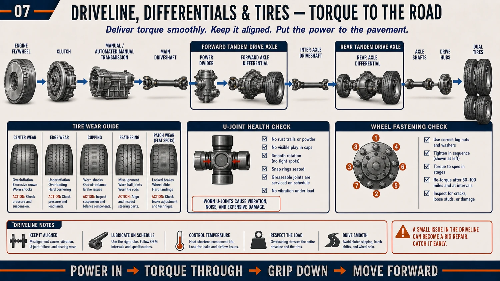
- U-joint check — wheels chocked, driveline unloaded: grab and try to move each joint; any detectable movement or rust powder ("bleeding") condemns it. Grease until fresh grease purges at all four caps — a cap that won't purge is a cap running dry.
- Vibration triage — speed-dependent (constant with road speed) = driveline/tires; RPM-dependent = engine/clutch; torque-dependent (loads on pull, gone coasting) = u-joint angles or a failing joint.
Drive axles
A tandem's forward-rear axle contains the power divider (inter-axle differential) — a third differential splitting torque between the two axles, with a driver-controlled lockout (IAD lock) for slick conditions. Each axle's own differential turns torque 90°, multiplies it by the ratio (fleet linehaul typically 2.6–3.6:1), and lets the wheels differentiate in turns; optional driver-controlled wheel diff locks fully lock a wheel pair.
| Axle | What It Is | Worth Knowing |
|---|---|---|
| Steer axle | Front, unpowered, does the steering | Carries ~12k lb legally; kingpins and bearings live here |
| Drive axle(s) | Powered; two together = a tandem | The forward-rear of a tandem houses the power divider |
| Tag / pusher axle | Extra unpowered axle behind (tag) or ahead (pusher) of the drives | Spreads weight for legal loads; often liftable to save tires when empty |
| Axle shafts | The rods carrying twist from diff to hub | Full-floating design: the shaft carries only twist — the hub and its bearings carry the truck’s weight. That’s why a broken shaft can be pulled out with the wheels still holding the truck up. |
| Planetary hubs | A final gear reduction inside each hub (heavy vocational trucks) | Multiplies torque at the very last step; has its own little oil supply to check |
- The power divider is the tandem's weak point: spinning the wheels on ice with the lock off makes its little internal gears whirl at crazy speed with no oil film between them — thirty seconds of wheelspin can ruin them for good. Rule for drivers: lock it before the slippery spot, unlock on dry pavement.
- Lube discipline: level at the fill plug, synthetic 75W-90 typical, change/inspect per schedule, and always check for water (gray milkshake) after deep-water exposure — breathers clog and axles inhale water as they cool.
- Noise diagnosis: whine on drive (accelerating) = ring/pinion pattern or preload; whine on coast = pinion bearing; clunk on throttle transitions = backlash somewhere — u-joints, slip splines, diff. Howl that changes with the IAD locked/unlocked = power divider.
Suspension, Steering & Wheel End
Where the truck meets the road — and where DOT inspectors, tire budgets, and driver complaints all converge. Almost everything here is diagnosed with your hands, a pry bar, and a pattern-reading eye.
Think of the truck as a body: the springs and air bags are its knees, the steering parts are its arms, and the wheel bearings are its ankles. And here is the trick of this chapter: tires are a diary. The way a tire wears down — one edge, both edges, wavy spots — tells you exactly what is broken above it, like footprints tell you who walked by.
Read the full simple story
Think of the truck as a body: springs and air bags are the knees (they soak up bumps), steering rods are the arms, wheel bearings are the ankles. Everything here is checked with hands, eyes, and a pry bar — no computer needed.
- The knees (air ride): rubber air bags hold the truck up, and a clever little valve keeps the truck at the exact same height whether loaded or empty. That height is a real spec — it sets the driveshaft angles. So a lazy height valve can cause a "driveline vibration." Everything is connected. The shocks do the calming — a dead shock makes the truck bounce like a ball and chews wavy spots into the tires.
- The arms (steering): with the wheels on the ground, have a helper saw the steering wheel back and forth while you watch each joint — any joint that wiggles before the wheel moves is worn. Loose arms = wandering truck = tired driver = worn tires.
- The ankles (wheel bearings): the wheel spins on two cone-shaped bearings that must be adjusted to a gap thinner than a hair — measured, not guessed. The habit that catches them failing: at every stop, lay a hand near each hub. One hub warmer than its brothers is a bearing starting to die. Cheap habit; it prevents the worst accident in trucking — a wheel coming off.
- The diary (tires): worn in the middle = too much air. Both edges = too little. One edge = something crooked. Feathered like fish scales = alignment. Wavy cups = dead shocks or bearings. The tire records everything above it — read it before replacing it.
- Wheel nuts: tighten to spec in a star pattern, then re-check after 50–100 miles — new joints settle like new shoes loosening. Rust streaks spreading from the stud holes = nuts that have been moving. That is a warning letter, not decoration.
In one sentence: knees, arms, ankles — check them with your hands, and let the tires tell you the story of everything above them.
Steer axle & steering
- Kingpins — the pivots the steer wheels turn on. Checked by jacking the axle and rocking the tire top-to-bottom (vertical/radial play) and watching the gap with a bar; worn kingpins cause wander, shimmy, and inner-edge tire wear, and are an OOS item beyond limits.
- Tie rod & drag link — the cross-link that keeps the wheels parallel and the link from the steering box's pitman arm. Test loaded (wheels on the ground) with a helper sawing the wheel: any lash, torn boot, or visible end movement condemns the end.
- Steering gear — the gearbox that turns steering-wheel motion into wheel-turning force, with built-in hydraulic muscle. It leaks at its two shaft seals, and "morning sickness" — steering that is heavy only when cold — means the pump or gear is wearing inside. Legal limit: the steering wheel must not turn more than about 30° of free play before the wheels respond (engine running).
- Alignment — "toe" means whether the two steer tires point perfectly parallel. A toe error the width of a coin edge scrubs steer tires bald in a few thousand miles. And alignment is not only the front: if the rear axles sit crooked, the whole truck drives slightly sideways ("dog-tracking") and drags the steer tires forever. Read the steer tires: both edges feathered = toe; one tire's edge only = something crooked is pushing the truck sideways.
Suspension
Air ride dominates: bags inflated through a height-control (leveling) valve that admits/exhausts air to hold a set ride height regardless of load. Ride height is a spec, not a preference — it sets driveline angles, so a lazy or misadjusted leveling valve causes driveline vibration, poor ride, and uneven bag wear. Shocks do all the damping (air springs have almost none) — a blown shock on air ride shows up as cab-punishing rebound and cupped tires. Leak-check bags and fittings with soap; a truck that kneels overnight has a bag, fitting, or leveling-valve leak. Spring suspension survives on vocational trucks: watch for cracked leaves, shifted spring packs, worn hanger bushings and U-bolts (re-torque after any spring work — stretched U-bolts are why spring packs shift).
Torque rods locate the axles fore-aft and control axle wrap; walk them with a pry bar at every PM — a dead torque-rod bushing writes its confession as a clunk on launch and wandering axle alignment.
Wheel end — bearings, seals, and the stakes
A wheel-off is the fleet catastrophe: a 250-lb wheel assembly leaving a truck at highway speed. Everything in wheel-end discipline exists to prevent it.
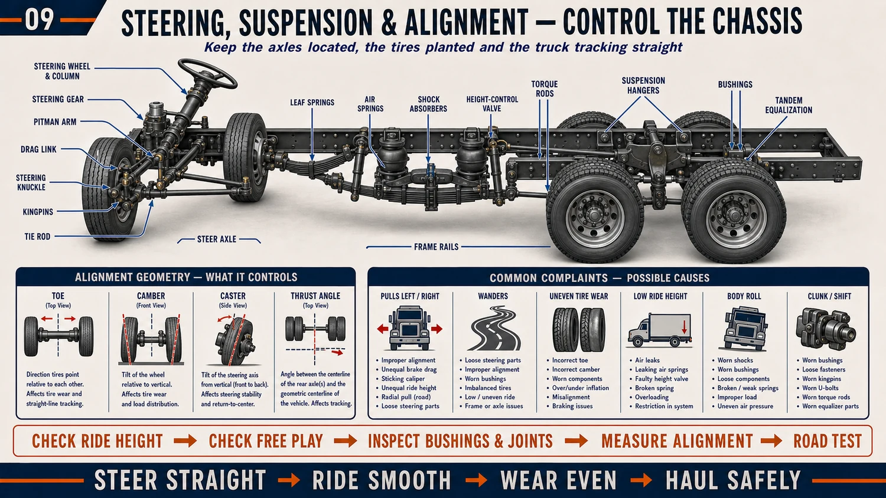
- Bearings — opposed tapered rollers that must run with near-zero play and near-zero preload. The classic TMC-style manual adjustment: seat the bearing (torque ~200 lb-ft while rotating), back off, re-torque light (~50 lb-ft), back off a defined fraction of a turn, lock, and verify end play 0.001–0.005" with a dial indicator. Pre-adjusted/unitized hubs remove the art — and are replaced, not adjusted.
- Lube — oil-bath hubs (steer/trailer) with a sight glass: level between lines, oil clear not milky (milky = seal letting water in). Semi-fluid grease hubs run sealed. A hub cap thrown clear of oil = bearing about to make the news.
- Wheel seals — the drip that oils a brake lining is an OOS violation twice over (leak + contaminated friction). Install with the right driver, never crooked, never reused.
- Wheel fasteners — hub-piloted 10-stud, M22 flange nuts: torque to 450–500 lb-ft, in a star pattern, on clean dry threads and clean mating faces — and re-torque after 50–100 miles, because joints settle. Rust streaks radiating from stud holes and shiny witness marks = nuts that have been moving. Stud-piloted (ball-seat) hardware is its own spec — never mix systems or a fluid mind will cost a wheel.
Wheel-end failures announce themselves: a hub warm to the back of your hand compared to its neighbors at a fuel stop, hub oil that darkens, a hum that changes on curves. Teach drivers the walk-around hand-on-hub habit and you'll catch bearings for the cost of a coffee break.
Tires — the second-largest cost after fuel
- Pressure is everything: a dual running 20% low flexes hot, delaminates, and drags its full-pressure twin down with it. Matched pressure and matched diameter across duals (¼" max difference) — the smaller tire scrubs and burns.
- Tread limits: 4/32" minimum steer, 2/32" elsewhere (DOT). Fleet pull points run deeper to protect casings for retreading — a linehaul casing is a 3-life asset (new → drive retread → trailer retread).
- Wear patterns are diagnosis: center wear = overinflation; both shoulders = underinflation; feathering = toe; one shoulder = camber/thrust; cupping/scallops = shocks or bearings; diagonal wipe on trailer tires = axle misalignment. The tire is a chart recorder of everything above it.
Fifth wheel & coupling
Cast-steel jaws lock around the trailer's 2" kingpin; the jaws and their wedge wear until slop appears (that clunk on throttle transitions from the back of the cab). Check lock adjustment per the maker's gauge/spec, lube the plate (grease or low-friction discs) and the locks, and inspect mounting bolts and pivot brackets — a fifth wheel walking on its mounts is a coupling failure being scheduled. The pull test (tug against locked trailer brakes) plus a visual on the jaws with a flashlight is the only coupling verification that counts.
Connecting tractor to trailer — the three lines
Behind the cab hang three coiled lines (drivers call them pigtails). They plug into the trailer’s front wall. Red gives the trailer its air supply — it is the boss: no red, no moving, because the trailer’s springs lock its brakes. Blue applies the trailer’s brakes when you press the pedal — the worker. The black 7-way cord carries no air at all — only electricity for lights, signals, and the trailer’s ABS computer — the messenger.
- Red gladhand (supply/emergency): charges the trailer tanks and holds off the trailer spring brakes. Pull the red valve in the cab (or break this line) and the trailer brakes slam on — that is the breakaway protection working as designed, together with the tractor protection valve from Chapter 10.
- Blue gladhand (service): carries the brake signal — pressure in this line mirrors your pedal. A leak here shows up only during brake applications, which is why applied-leak tests exist.
- 7-way connector: seven pins — ground, tail lamps, left turn, right turn, stop lamps, ABS power, and auxiliary. Corroded or spread pins here explain most "trailer lights half working" complaints. Dielectric grease in the plug twice a year prevents almost all of it.
- After every coupling — the tug test: lock the trailer brakes, pull gently forward in low gear. The trailer must hold you. Then a flashlight on the fifth-wheel jaws to confirm they closed around the kingpin — not behind it. Thirty seconds; prevents the dropped trailer.
- The release handle & the air slide: the handle pulls the jaws open for uncoupling — only with the trailer legs down and supported. Many fifth wheels also slide fore-and-aft on air-released lock pins: moving it shifts weight between steer and drive axles to pass the scales. After every slide, confirm the lock pins snapped fully home — a fifth wheel sliding at highway speed is a coupling failure in progress.
- Crossed lines: gladhand seats are shaped and color-coded so red goes to red, blue to blue. Crossed anyway? The trailer brakes won’t release, or the pedal does nothing to the trailer — either way the tug test catches it before the highway does.
Trailer & Reefer Systems
The tractor earns nothing without the box behind it. Trailers have their own brakes, lights, suspension, and — on a reefer — a whole second diesel engine. Trailer problems strand loads just as fast as engine problems, and they’re easy to forget because the trailer isn’t “yours” the way the tractor is.
A trailer is a simple machine with four things that break: its brakes (same air system as the tractor, fed through the red and blue lines), its lights (fed through the 7-way plug), its tires and wheel ends (same rules as any axle), and its landing gear (the legs that hold it up when unhooked). A reefer adds a fifth: a little diesel engine and fridge that keeps the load cold — and it has its own fuel, oil, belts, and alarms to watch.
The trailer air & brake system
Covered from the tractor side in Chapter 11 — here’s the trailer’s half. Air arrives through the red (supply) line and fills the trailer’s own reservoir; the blue (service) line carries the brake signal. The trailer has its own spring brakes that lock automatically if it loses air — which is the whole safety design: a trailer that breaks away stops itself. Trailer ABS is required and has its own light (on the driver’s side, visible in the mirror); it self-tests at key-on.
- Gladhand seals — the $3 rubber grommets are the #1 trailer air leak. Carry spares.
- Trailer ABS light staying on — usually a wheel-speed sensor pushed away from its tone ring, or a chafed lead at the axle. Base brakes still work; fix before the next inspection.
- The trailer air tank drains too — water collects here just like the tractor. In winter, drain it.
Landing gear, kingpin & the frame
- Landing gear (the legs): a two-speed crank raises and lowers them. Low gear for lifting a loaded nose, high gear for speed once the weight is off. Grease the crank gearbox; a seized leg strands a trailer as surely as a dead engine. Never drive off with legs partly down.
- Kingpin & upper coupler: the 2″ pin the fifth wheel locks onto, and the reinforced plate around it. Inspect for cracks, wear, and a bent pin — a worn kingpin causes coupling slop and is an out-of-service item.
- Sliding tandem (the bogie): many trailers slide their rear axles fore-and-aft on lock pins to balance axle weights for the scales. After every slide, confirm all four lock pins snapped fully home — a tandem that slides on the road is a disaster.
- Frame & crossmembers: check for cracks, especially around the kingpin plate and suspension hangers; road salt and dock impacts do the damage.
Trailer types, briefly
| Type | What’s Special | Watch For |
|---|---|---|
| Dry van | Enclosed box, the everyday workhorse | Roof leaks, door seals, floor rot, wall damage from forklifts |
| Reefer | Insulated box + refrigeration unit | The whole reefer system below — plus door seals and drains |
| Flatbed | Open deck, cargo secured on top | Securement: straps, chains, binders, tarps — the load is the liability |
| Tanker | Liquid; the load moves (surge) | Baffles, surge on braking, special endorsement, spill risk |
The reefer — a second engine to maintain
A refrigerated trailer carries a small diesel engine (Thermo King, Carrier) driving a compressor — essentially a self-contained fridge on a fuel tank. It runs whether or not the tractor is attached, and a reefer failure means a spoiled load — often the single most expensive breakdown a fleet faces, because you lose the freight AND the claim.
What it needs
Its own fuel (keep the reefer tank full — running out mid-haul thaws the load), engine oil and filters on the unit’s own schedule, belts, coolant, and clean condenser/evaporator coils (blocked coils = poor cooling, like a plugged radiator).
How it fails
Not holding temperature is the alarm that matters. Causes: low refrigerant, dirty coils, a bad door seal letting warm air in, a blocked evaporator drain icing up, low fuel, or a failed defrost cycle. Modern units log alarm codes — read them like J1939.
- Pre-trip the reefer like the tractor: fuel level, oil, belts, no alarm codes, set-point correct, and pre-cool the empty box before loading.
- Airflow is everything: the load must be stacked so cold air can circulate — a solid wall of freight against the front bulkhead blocks the very air trying to cool it. This is a loading discipline, not a repair.
- Continuous vs. start/stop mode: continuous holds temperature tighter (sensitive produce); start/stop saves fuel (frozen loads that tolerate swings). Wrong mode ruins loads or wastes money.
A reefer download (the temperature log) is legal evidence in a spoilage claim. If a receiver rejects a load for temperature, that log proves whether the reefer did its job — so a working, calibrated unit with clean logs protects you from claims you didn’t cause. Treat the reefer’s maintenance file as seriously as its cargo.
Diagnostic Thinking — How a Master Thinks
Tools are cheap. Parts are expensive. Thinking is what separates a mechanic from a parts changer — and thinking can be learned, because it is a method, not a talent.
When a truck has a problem, the wrong question is “which part should I replace?” The right question is “what does the engine need that it is not getting?” An engine only needs a few things — air, clean fuel, squeeze, correct timing, a free exhaust, and honest sensors. One of them is missing. Your job is a detective mystery: find the missing one with cheap tests, and only then spend money.
A diesel only needs six things
Air
Enough of it, cool, and not escaping through a leak. Cheap tests: filter minder (30 seconds), boost datalog, charge-air pressure test.
Fuel
Clean, at pressure, on time. Cheap tests: filter history, supply pressure gauge, commanded-vs-actual rail pressure.
Compression
The squeeze that makes the heat. Cheap tests: cylinder cutout, relative compression, blow-by check.
Timing
Everything happening at the right moment. Cheap tests: cam/crank sync codes, overhead adjustment history.
A free exhaust
The breath must get OUT. Cheap tests: DPF ΔP data, back-pressure reading, regen history.
Honest sensors
The brain needs the truth. Cheap tests: freeze frames, rationality compares, the wiggle test.
Every runability complaint — low power, hard start, rough running, smoke, derate — is one of these six missing. Walk the list with the cheap tests, and the problem has nowhere to hide.
The no-power walk — a worked example
Truck is weak. The parts-changer orders a turbo. The master walks the ladder, cheapest first:
- Codes + freeze frames (5 minutes, free) — an active derate feels exactly like a mechanical problem. Chase software before iron.
- Filter minder (30 seconds, free) — a choked filter starves everything downstream.
- Boost datalog on a loaded pull (free) — commanded vs. actual tells you which half of the air system to suspect.
- Charge-air pressure test ($0 in parts) — the soot-streak-painted leak is found here, not at the parts counter.
- Fuel filters and supply pressure (cheap) — the classic fine-at-cruise, dies-on-hills pattern.
- Cylinder balance/cutout (free with the laptop) — finds the weak hole fuel-side or compression-side.
- Exhaust back-pressure (free, from ΔP data) — a loaded DPF chokes the turbo quietly.
- Now — and only now — does anyone say the word “turbo.”
The turbo is the most-blamed, least-guilty part on the truck. It sits in the middle of the air system, so every upstream and downstream problem wears its symptoms. Ninety percent of “bad turbos” that come across a counter were healthy victims of a $30 leak or a loaded filter.
The four master habits
Split the system in half
Don’t test every inch — cut the system in the middle and test there. Fuel starving? Check pressure at the secondary filter: good there = problem is downstream; bad there = upstream. Each test cuts the search area in half. Five smart cuts beat fifty blind checks.
Compare against known-good
Fleet twins are the best spec book ever printed. Same truck, same duty, no complaint? Datalog both and lay the numbers side by side. The difference IS the diagnosis — no manual required.
Change one thing, then retest
Change two things and the truck gets fixed without telling you which one worked — so you learn nothing, and next time costs double. One change, one road test, one conclusion. Slow is smooth; smooth is fast.
Suspect the last hand that touched it
A new problem right after a repair is not a coincidence until proven otherwise. Unplugged connectors, pinched harnesses, boots not seated, wrong routing — ask “what changed just before this started?” first, every time.
The evidence board
Before touching a wrench, answer three questions like a detective pinning photos to a wall. When does it do it? Cold only, hot only, loaded only, or always — each pattern excludes half the suspects (a cold-only problem is never a heat-soaked sensor; a loaded-only problem is never idle hardware). What changed recently? Repairs, fuel stops, new driver, new route, weather. What does the freeze frame say? The computer photographed the crime scene — boost, temps, load, RPM at the exact moment. Read the photo before interviewing witnesses. And a rule for the ghosts: an intermittent fault is a wiring problem until proven otherwise — solid parts fail solidly; connections fail when the road shakes them.
Ask what the engine is missing — air, fuel, squeeze, timing, breath, or truth — test from cheap to expensive, change one thing at a time, and let evidence spend your money instead of guesses.
Common Failures — Why Trucks Really Break
A truck almost never breaks without warning. It whispers before it screams. Strange noises, little leaks, funny smells, weak power, extra smoke, a warning light — the truck is trying to tell you something. The smartest mechanics don’t fix the broken part first. They ask: “What made this part die?” Because every broken part has a parent problem.
Most expensive repairs happen because a small problem was ignored. A $20 leak becomes a $20,000 engine. A loose clamp becomes a destroyed turbo. A weak battery becomes a truck that won’t start on Monday morning. The earlier you catch the clue, the cheaper the repair.
The 8 most common truck failures
1 · The turbo dies
The turbo spins over 130,000 RPM, floating on a tiny film of engine oil. If the oil is dirty, if the oil is low, if someone shuts a hot engine off immediately — the bearings cook. Soon the turbo wobbles. Then the blades hit the housing. Game over. Stop it: clean oil on time, and let a worked engine idle 2–3 minutes before shutdown.
2 · The injectors wear out
Injectors are tiny spray bottles. Dirty fuel slowly sands the tiny holes larger. Water rusts them. Eventually they stop spraying mist — instead they squirt. The engine becomes loud, smoky, and weak. Stop it: clean fuel, filters on schedule, and drain the water separator every week.
3 · Coolant disappears
Coolant never simply disappears. It has exactly four escape doors: out the overflow, into the engine oil, into the cylinders, or into the heater core. Find the door — you find the problem. Stop it: pressure-test the system, and on modern engines check the EGR cooler first.
4 · Batteries keep dying
Usually the batteries aren’t the problem. Something is stealing power. Or the alternator isn’t charging. Or a rusty cable is blocking electricity. Never replace batteries before testing the system. Test each battery alone, verify 13.8–14.4 V charging, and measure the key-off draw.
5 · Air leaks
The truck lives on compressed air. Every little leak makes the compressor work harder. Small leak today — worn compressor tomorrow. Listen: the truck is telling you exactly where the money is escaping. Stop it: the soap-bottle hunt — gladhand seals, fittings, valve exhaust ports.
6 · Brake problems
Brake shoes slowly wear. Slack adjusters go out of adjustment. The driver never notices — the pedal feels the same while stopping distance quietly grows longer. That is why push-rod travel is measured, not guessed. Stop it: stroke check at every A-service, and function-test the automatic adjusters.
7 · Overheating
Most overheated engines aren’t caused by “bad engines.” Usually it is low coolant, a plugged radiator, a weak fan, a bad thermostat, or a failed water pump. The engine is usually innocent — something stopped carrying the heat away. Stop it: fins, fan, thermostat, and coolant level before ever blaming the engine.
8 · Electrical problems
Nine out of ten electrical failures aren’t computers. They’re wires. Broken wire. Loose ground. Green corrosion. Pinched harness. Electricity can’t jump across broken connections. Stop it: wiggle-test the harness and voltage-drop the circuit before replacing expensive parts.
Replace the broken part without fixing what killed it — and you’ll buy the same repair twice. Great mechanics don’t replace parts. They remove the reason the part failed.
The detective habit
Whenever something breaks, ask three questions:
What failed?
Name the exact part and the exact way it died — not “the brakes are bad” but “the left drive axle chamber is over-stroke.”
Why did it fail?
Find the parent problem — the dirt, the heat, the leak, the neglect that killed it. The clues chapter and the worn-parts chapter are your tools.
How do I stop it happening again?
Change the practice, the interval, or the part quality — so this failure’s brothers never get born on the rest of the fleet.
Those three questions turn a parts changer into a mechanic.
Every breakdown starts as a tiny clue — find the cause before replacing the part, and you’ll fix the truck once instead of twice.
Reading Worn Parts
Parts don't just fail — they testify. The difference between a parts-changer and a master is that the master reads every component that comes off the truck, because the failure pattern names the cause that's still bolted to the chassis.
A broken part is like a crime scene: it always leaves clues about who did it. A bearing worn on one edge says "something is crooked." Scratches say "there was dirt in the oil." Burnt black color says "there was no oil at all." Never throw a broken part in the bin without reading it first — because the criminal is still on the truck, waiting to kill the new part too.
Read the full simple story
The idea: a broken part is a crime scene. It cannot talk, but it always leaves clues about who did it. Throw it away unread, and the criminal — still on the truck — kills the new part the same way.
How to read the clues, simply:
- Bearings: even gray = honest old age. Scratches = dirt got into the oil (find the hole it came through). Black and burnt = the oil stopped coming (find out why BEFORE rebuilding). Shiny stripes with copper showing = the oil got thin — usually fuel leaking into it. Worn on one edge only = something is bent or crooked.
- Injector tips: clean tip with even spray marks = healthy. A black carbon trumpet = it was running too hot with too little flow. Fat blurry spray holes = dirty fuel wore them open — and its five brothers drank the same fuel, so test them all.
- Brake drums: a spider web of tiny cracks = normal heat aging, just watch it. Deep cracks you can catch a fingernail in = replace. Blue patches = that brake was dragging and cooking. Shiny glassy pads = they overheated once and are now slippery forever — replace them even though they "measure fine."
- Cut your oil filters open (a $40 tool): sparkles in the pleats = metal on the move somewhere. A magnet tells you if it is steel (crank, gears) or not (bearings, pistons). It is a free engine checkup hiding in your trash.
Start a museum: keep a shelf of interesting dead parts, each tagged with which truck and what happened. It becomes your shop’s memory — and the day a second part fails the same way, the shelf reveals the pattern.
In one sentence: every dead part names its killer — read it before you bin it, or buy the same funeral twice.
Bearings — the crankcase's flight recorder
Pair what you see with the oil-analysis history: dirt embedment plus a silicon spike closes the case on an intake leak; wiped overlay plus fuel dilution in the sample convicts an injector. The new bearings will die the same death unless the pattern's cause is fixed first.
Injector tips
Drums, linings, and friction surfaces
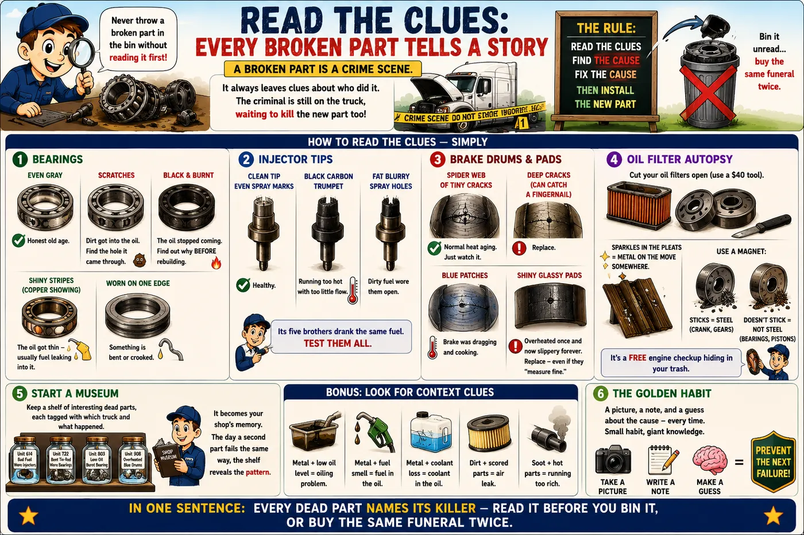
The rest of the truck speaks the same language
U-joints & driveline
Rust powder "bleeding" from a cap seal = the joint is running dry and dying. Brinelling (dents worn into the cap races at each trunnion position) = the joint stopped articulating and hammered itself — often from angles out of spec, so check ride height too. A yoke with polished witness marks means something has been moving that shouldn't.
Belts & hoses
Belt glazing (shiny sidewalls) = slipping — tensioner, not belt. Even cracks across the ribs = age. Chunks missing = misalignment throwing the belt. A coolant hose that feels soft and gummy near the clamps is being eaten electrochemically from the inside (ECD) — replace, and check for stray voltage through the coolant with a multimeter: over ~0.3 V between coolant and battery ground means bad grounds are using the cooling system as a wire.
Filters — cut them open
An oil filter cutter costs $40 and turns every drain into a teardown inspection. Sparkles in the pleats = metal on the move (magnet separates steel from aluminum). Sludge = oxidized oil, interval too long. On fuel filters: black slime = microbial growth; wax = gelling; rust = tank corrosion; a filter that collapsed inward = severe restriction upstream.
Electrical connectors
Green crust = active corrosion wicking up the strands — cut back until you find bright copper, however far that goes. Browned or melted terminal housings = heat from resistance at that pin; the connector was the fault. Fretting (gray powder on pins that "weren't loose") explains intermittents that vanish when you unplug and reseat — which is why the wiggle test finds what the meter misses.
Keep a morgue shelf: every interesting failed part, tagged with the unit number and story. It becomes the best training library your shop will ever own, it settles warranty arguments with photographic evidence, and the day a second part fails the same way, the shelf shows you the fleet-wide pattern a work-order system never will.
Procedures & Specs
The bench-tested procedures behind every diagnosis in this reference, step by step — plus the map to the serial-number-exact data that no general reference can responsibly print.
These are recipes — like baking a cake. Follow the steps in order, don’t skip any, and you get the same good result every time. Where a number depends on your exact engine (like oven temperature depends on your exact oven), the step tells you to look it up — and the end of this chapter shows exactly where to look.
Read the full simple story
The idea: these are recipes, like baking. The steps are in a fixed order for a reason — skip one and the cake fails, even if you can’t see why yet. Follow them exactly and you get a professional result every single time, no experience required.
Two things to understand about recipes:
- Measure, don’t feel. "Tight enough" is not a number. Wheel bearings get a dial indicator — a clock-faced ruler that measures gaps thinner than a hair — because the difference between perfect and dangerous is invisible to your hands. Brake adjustment gets a real measurement of how far the rod travels. If the recipe says measure, measure.
- "Confirm OEM" = check YOUR oven’s manual. Some numbers depend on your exact engine or axle, the way baking time depends on your exact oven. Those numbers live in the maker’s books, filed by serial number — and the end of this chapter lists exactly which website or manual holds each one. Looking it up takes two minutes. Guessing costs an engine.
In one sentence: follow the steps in order, measure instead of feeling, and look up the numbers that belong to your exact truck.
These are the industry-standard methods (TMC-style practice). Where a value depends on the specific engine, axle, or build date, the step says confirm OEM — that means look it up by serial number, every time. Guessing a spec is how "maintenance" becomes "root cause."
Wheel-bearing adjustment (manual adjust, per TMC RP-618 method)
- Seat the bearings: torque the inner (adjusting) nut to 200 lb-ft while rotating the wheel in both directions.
- Back the nut off one full turn.
- Re-torque to 50 lb-ft while rotating the wheel.
- Back off the final amount per nut type — typically ¼ turn single nut with lock, ⅙–⅓ turn for double-nut systems (confirm the axle maker's table).
- Install the lock, torque the jam nut to spec, and verify with a dial indicator: 0.001–0.005 in end play. No dial indicator, no verified wheel end — that's the rule that prevents wheel-offs.
Brake stroke measurement (the legal adjustment check)
- Chock the wheels, release the parking brakes, build full system pressure (engine off).
- Mark each pushrod at the chamber face, brakes released.
- Helper makes and holds a full application at 90–100 psi.
- Measure marked point travel = applied stroke. Compare against the limit table in Chapter 10 for the chamber type and stroke design.
- Over-stroke on an automatic slack = function-test the adjuster (it should ratchet on repeated applications); replace it if it doesn't self-recover. Manually tightening a failed auto-slack hides the violation without fixing it.
Air system leak test
- Full pressure, engine off, service brakes released: watch gauges 1 minute — max 2 psi/min loss (single vehicle), 3 psi/min (combination).
- Full pedal application held: max 3 psi/min single / 4 combination.
- Beyond limits: soap-spray gladhand grommets, chamber clamps, fittings, and every valve exhaust port. Isolate circuits by plugging lines to corner the leak.
- Then verify the warning system: pump down — low-air warning by 60 psi, spring brakes pop out at roughly 20–45 psi.
Charge-air cooler pressure test
- Cap both CAC ports with test plates (kit), regulator set to ~30 psi shop air.
- Pressurize, close the supply valve: losing more than ~5 psi in 15 seconds fails (confirm OEM limit).
- Soap the boots, clamps, end-tank crimps, and core face; look for soot streaks that mark the leak's history.
Suction-side fuel test (air intrusion hunt)
- Overnight hard-start complaint: before touching anything, datalog rail-pressure build time during crank for the baseline.
- Pressurize the tank/suction side to 5–7 psi max with a cap adapter (more can damage tanks and seals).
- Inspect every fitting, the primary filter housing o-ring, hand primer, pickup tube, and hose chafe points for weeps.
- No visible leak: install a clear sight-glass section at the pump inlet and watch for bubbles at idle and under load.
Voltage-drop test (cranking circuit)
- Verify battery bank first: rested voltage ≥ 12.5 V, each battery load-tested individually.
- Meter from battery + post (post, not clamp) to starter B+ stud. Crank. Reading = positive-side drop: ≤ 0.5 V.
- Meter from battery − post to starter case. Crank. Ground-side drop: ≤ 0.5 V.
- Over limit: split the section in half with the meter and re-crank until the bad connection confesses (≤ 0.2 V per connection).
Cooling system fill, vent & combustion test
- Fill per the OEM procedure — big engines trap air; use the vent points or a vacuum-fill tool.
- Run to temperature with the heater on max (the heater core is the classic air trap), verify heat in the cab.
- Re-check level cold the next morning; a system that "made room" overnight had an air pocket — or has a leak.
- Combustion-gas check: block tester on the surge tank while warming — fluid turning yellow convicts a gasket/cooler/cup. Also squeeze-test: instant pressure in the upper hose on cold start is the same verdict.
Oil sampling technique (make the lab data mean something)
- Sample hot, mid-stream — never the first or last of the drain, never a cold pan bottom.
- Same point, same method, every truck, every time — trends only work on consistent samples.
- Label with unit, miles, miles-on-oil, and any makeup oil added. Send the same day.
- Read trends against the unit's own history first, the fleet average second, the lab's generic limits last.
Torque quick reference — typical values, confirm OEM
| Fastener | Typical Spec | Notes |
|---|---|---|
| Wheel nuts, hub-piloted M22 flange | 450–500 lb-ft | Clean dry threads, star pattern, re-torque at 50–100 mi |
| Wheel bearing adjusting nut | 200 → back off → 50 lb-ft | Per RP-618 sequence above; verify end play |
| Spring U-bolts | 270–420 lb-ft (size-dependent) | Re-torque after settling; never reuse stretched U-bolts |
| Driveshaft strap/bearing-cap bolts | 45–60 lb-ft (series-dependent) | Always with thread locker per maker; torque, not impact |
| Battery terminal (post clamp) | 10–15 lb-ft | Overtightening cracks posts; protectant after |
| Engine hardware (heads, rockers, injector clamps) | OEM ONLY — by ESN/serial | Torque-turn sequences change by build; never generic |
Where the exact numbers live
This is how "no other source" really works: this reference carries the understanding, and these carry the serial-number data — lookups, not learning:
Cummins QuickServe Online
Free registration + the ESN unlocks parts catalogs, spec sheets, and service bulletins for that exact engine. INSITE software adds live data, fault trees, and calibrations. The ESN plate is on the rocker housing — record it in every unit's file.
Detroit DDDL + Detroit Connect
DDDL is the diagnostic/service window into MCM & ACM; Detroit Connect portal carries the fault history and remote snapshots. Serial-keyed service info comes through the DTNA/Excelerator ecosystem via your dealer login.
TMC Recommended Practices
The industry's how-to bible — wheel ends (RP-618), out-of-service criteria, tire management, electrical repair standards. A TMC RP manual in the shop settles method arguments permanently.
FMCSA 49 CFR Part 393/396
The legal layer: equipment requirements, inspection standards, Appendix A annual criteria. Free online, and the actual text beats folklore every time an inspector and your shop disagree.
Fleet Economics
The master mechanic's final skill isn't mechanical: it's knowing when a repair is a good investment and when it's throwing money at a truck that's already told you its answer. Every wrench decision is a money decision.
A truck is a worker: it earns money when it drives and costs money when it doesn’t. A new truck costs a lot in payments; an old truck costs a lot in repairs; the cheapest years are in the middle. The whole game of this chapter is one idea: fixing a truck on YOUR schedule in YOUR garage is always cheaper than the truck breaking on the road — because a breakdown charges you three times: the repair, the tow, and the load that didn’t arrive.
Read the full simple story
The idea: a truck is a worker. It earns money every mile it drives and costs money every day it doesn’t. Every repair decision is really a money decision — and the math is simpler than it looks.
- The truck’s life has three chapters. Young truck: expensive payments, cheap repairs. Old truck: no payments, expensive repairs and surprise breakdowns. The middle years are the cheapest — the game is stretching that middle and deciding what to do BEFORE the old-truck chapter decides for you.
- The 50% rule: if one repair costs half of what the whole truck is worth, stop. You are not repairing anymore — you are buying the truck again. Sometimes that is still right (good chassis, you know its history) — but decide it on paper, not in a panic.
- Count what money is already gone as GONE. "We already spent $8k on it" is not a reason to spend more. The only question that matters: from today forward, which path costs less per mile?
- A breakdown charges you three times: the repair (same price either way), PLUS the tow, PLUS the load that didn’t arrive and the driver sitting. That is why finding problems in the garage is the whole business: the dentist visit and the root canal use the same drill — the difference is everything around it.
- Keep two scores: how many problems your garage catches before the road does (aim for 8 out of 10), and how many repairs come BACK within a month (aim for zero — that one measures whether the diagnosis was right).
In one sentence: know where each truck is on its life curve, decide big repairs with forward-looking math, and remember every garage find is a highway breakdown you never paid triple for.
Cost per mile — the fleet's vital sign
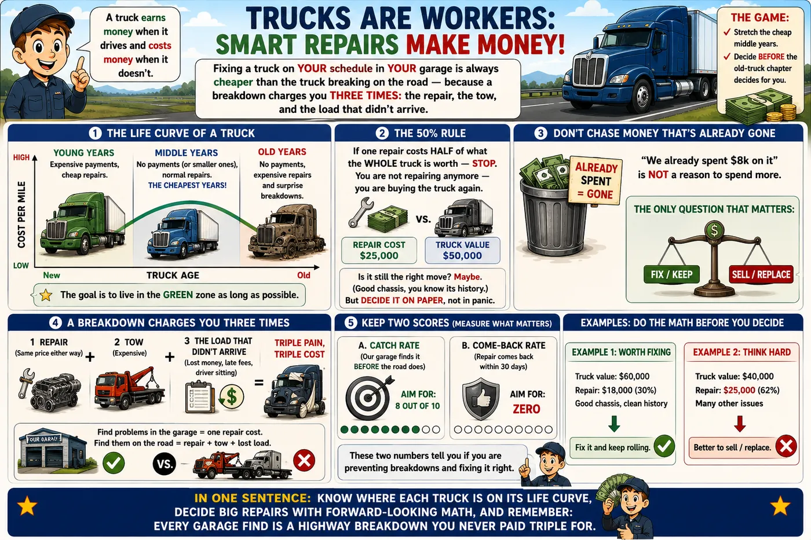
Track maintenance CPM per unit, monthly: total maintenance spend ÷ miles run. The absolute number varies by duty; the trend is the diagnosis. A unit whose maintenance CPM breaks away from its fleet siblings is raising its hand — either it has a chronic unfixed problem, or it has crossed into the wear-out phase of the curve.
The downtime number nobody writes down
A truck in the bay isn't just a repair bill — it's a revenue asset stopped. Rough it honestly: lost revenue per day, plus a driver being paid or lost, plus any rental/substitute cost. For most linehaul operations that stacks to several hundred to over a thousand dollars a day before the first part is billed. This number is why the whole reference keeps repeating the same sermon: a $470 tank-plumbing repair on your schedule beats the same repair at a TA on I-81 with a load stranded — the parts cost the same; the downtime doesn't.
Repair vs. replace — the honest math
- The 50% rule of thumb: when a single repair exceeds ~50% of the truck's current market value, stop and run the full comparison — you're no longer repairing, you're re-buying.
- Compare forward, not backward: money already spent is gone (sunk cost). The only question is: from today, what does each path cost per mile over the next 12–24 months — this repair plus this truck's likely next failures, versus payment + insurance delta on a replacement?
- Cascade risk is real cost: a million-mile truck needing an EGR cooler is also a million-mile truck with million-mile injectors, air compressor, and clutch. Price the repair against the unit's inspection findings, not just the complaint.
Overhaul vs. trade
An in-frame overhaul (liners, pistons, bearings, gaskets — commonly $20k–35k depending on scope and what the teardown finds) buys a known truck several hundred thousand more miles for a fraction of a new-truck price. It wins when: the chassis, cab, and drivetrain are sound; the truck is owned outright; the spec still fits your freight; and you control its history. Trading wins when: emissions-era jumps buy real fuel economy, the chassis is tired everywhere at once, warranty coverage matters to your cash flow, or the used market is paying well for your iron. Decide inside the window on the curve above — a planned overhaul at 700k beats an emergency one at 850k by exactly one tow, one lost load, and one month of unplanned downtime.
PM as an investment (the ratio that justifies your shop)
- Industry experience puts every scheduled-maintenance dollar against $3–$10 of avoided breakdown cost once tows and downtime are counted.
- KPI: found-on-PM ratio — the share of all repairs discovered in the bay instead of on the road. A healthy program lives at 80%+. Falling ratio = your PM checklists or intervals have drifted from your duty cycle.
- KPI: comeback rate — repeat repairs within 30 days. It measures diagnostic quality, and it's the number this whole reference exists to drive toward zero.
Warranty & parts strategy
Warranty recovery
Document like a lawyer: photos of every failure, oil samples on file, PM records complete and dated. Base and extended warranties are contract items — but policy adjustments (goodwill on out-of-warranty failures with a known pattern) go overwhelmingly to fleets that show up with a documented maintenance history. Your RO trail is money.
Cores & casings
Injectors, turbos, starters, alternators, calipers carry core charges — the old part is worth real money; track and return every one. Same logic on tires: a linehaul casing is a multi-life asset (new steer → drive retread → trailer retread); protecting casings from run-flats and curbing is protecting inventory.
OEM vs. aftermarket — tier it
Precision and safety parts (injectors, VGT actuators, aftertreatment sensors, brake friction) = OEM or OES-grade only; the cheap version costs a comeback. Commodity wear parts (filters meeting spec, belts, hoses, lighting) = quality aftermarket saves 20–40% with no penalty. The tier list should be written policy, not each tech's mood.
Stock the fast movers
Twenty SKUs cause most of your unplanned parts runs: filters for every engine in the fleet, belts, gladhand grommets, valve stems, headlights, air fittings, DEF nozzles, NOx sensors for your dominant platform. A $3k shelf kills a thousand hours of waiting.
The best fleet mechanics think in failures per 100k miles, not failures per week. Normalize everything to miles and the fleet becomes legible: which unit, which system, which vendor's parts, which driver's truck. The data you're already generating on every RO — like the one you showed me — is a free consultant if you total it by VMRS-style categories once a quarter.
Winter Survival
Cold is where fleets lose trucks. Not on the mountain — in the parking lot at 5 a.m., when the truck that ran fine yesterday won’t start, won’t build air, or won’t take fuel. Winter failures are almost all preventable — but only by the person who prepared in October.
Cold does four cruel things to a truck. It turns diesel to wax (won’t flow). It weakens batteries right when the engine is hardest to turn. It freezes the water hiding in the air system into ice that blocks the brakes. And it freezes the DEF. Every one is beaten by preparation, not repair — the driver who fuels right, plugs in, and drains tanks never meets the tow truck.
Enemy 1 — Fuel turns to wax (gelling)
Diesel carries paraffin wax that stays dissolved when warm but crystallizes in the cold — around 10–20°F for untreated #2. The wax plates the fuel filter first, so a winter no-start with a slimy, translucent film on the filter is gelling, not a mechanical fault.
Prevent it
Run winter-blend fuel (#1/#2 mix) once cold arrives. Dose anti-gel additive BEFORE the cold snap — it can’t un-gel wax already formed, only stop it forming. Change fuel filters going into winter; a half-plugged filter gels first.
If it’s already gelled
Get the truck into a warm shop and let it thaw. Change the waxed filters. Some use approved de-icer in the filter and tank. Never open-flame a fuel system. Then fix the program so it never repeats.
Water in fuel makes gelling far worse and freezes solid on its own — plugging lines with ice. The 30-second weekly water-separator drain is a winter life-saver. And never let tanks run low in winter: a near-empty tank breathes moist air that condenses to water.
Enemy 2 — Batteries lose their muscle
A battery at 0°F delivers only about half its rated cranking power — at the exact moment cold, thick oil makes the engine hardest to turn. This is why marginal batteries that “worked fine” in September author January no-starts.
- Load-test the whole bank in the fall — every battery, individually. One weak teammate drags the set down (Chapter 12). Replace as a matched set before the cold, not during it.
- Clean and protect terminals — corrosion adds resistance exactly when you can least afford voltage loss.
- Use the block heater. Plugged in overnight, it keeps the coolant — and the oil around it — warm enough to crank and fire easily. The single best cold-start tool there is.
- Right winter oil. A correct-viscosity oil (the “W” winter number) flows at startup; too-thick oil is like cranking against glue.
Enemy 3 — Water in the air system freezes
The compressor pushes a little water into the air tanks with every stroke. In summer you drain it; in winter, undrained water freezes into ice that blocks valves, sticks brakes, and causes the classic February morning with no air and no release.
- The air dryer is your winter hero — a fresh desiccant cartridge going into winter keeps water out of the system entirely. Milky water at the wet-tank drain means the cartridge is overdue (Chapter 11).
- Drain all tanks at the end of each day in deep cold — pull every drain until only air hisses.
- The dryer needs its heater. The purge valve has an electric heater to keep itself from freezing; verify it works (amp-clamp it) in the fall. A frozen purge valve is a truck that won’t build air.
- Alcohol evaporators / air-line antifreeze help on older trucks, but they treat the symptom — a working dryer treats the cause.
Enemy 4 — DEF freezes
DEF freezes at 12°F — and that is expected and normal. The truck is designed for it: heaters in the tank and lines thaw the DEF after startup, and freezing/thawing causes no damage. Do not add anything to DEF to stop it freezing — that ruins it and triggers a quality fault.
- Verify the DEF tank and line heaters work in the fall — a failed heater means a slow thaw and possible derate until the system reaches temperature.
- Store spare DEF where it won’t freeze-thaw repeatedly (it degrades), and never use DEF that separated after freezing.
Everything else the cold attacks
| System | What Cold Does | The Prevention |
|---|---|---|
| Coolant | Weak mix freezes, cracks the block or heads | Refractometer-test to −34°F (50/50); test in fall, not after the freeze |
| Tires | Pressure drops ~1 psi per 10°F — low tires flex, run hot, fail | Set pressures to spec in the cold; check weekly all winter |
| Wipers & washer | Blades freeze to glass, summer washer fluid freezes | Winter washer fluid; lift blades when parked; verify defrost works |
| Air bags | Moisture in bags freezes; leveling valves stick | Dry air (the dryer again); exercise the system |
| Doors & locks | Freeze shut; fifth-wheel grease stiffens | Silicone on seals; winter-grade fifth-wheel grease |
| Regen | Cold, short trips never reach passive-regen temps → soot builds | Watch soot load; schedule parked regens for idle-heavy cold duty |
The October checklist — beat winter before it starts
Click each as you complete it on every truck:
Winter doesn’t break trucks — it exposes the ones that weren’t maintained. Every January no-start was a September deferral. The fleet that spends two hours per truck in October — batteries, dryer cartridge, filters, coolant test, heater check — spends zero mornings that winter waiting on a tow in the cold. It is the highest-return two hours in the whole maintenance year.
PM Schedules & Checklists
Preventive maintenance is the entire business case of a fleet shop: every dollar of scheduled work replaces three to ten dollars of breakdown, plus the tow, the late load, and the driver sitting. Here is the classic A/B/C/D structure, ready to adapt.
This is the dentist plan for trucks. Small checkups often (clean, look, tighten), medium checkups sometimes (change the oil, test everything), and a big deep checkup once a year. Why? Because a small cavity is cheap and a root canal is not. Every problem found in the garage is a breakdown that never happens on the highway.
Read the full simple story
The idea: the dentist plan. Small checkups often, deeper ones sometimes, a full exam yearly — because a cavity filled today is a root canal that never happens.
- A-service (often): the quick checkup — grease every joint, look at everything, squeeze and listen, check air and tires and lights. It is simple on purpose: 80% of brewing problems show themselves to anyone who actually looks.
- B-service (medium): everything above PLUS fresh oil and filters — and always the $30 oil blood-test, because the trend line across samples is where engines confess early.
- C-service (yearly): the full physical, including the government-required annual inspection. Deep checks: gearbox and axle oils, wheel-bearing gaps measured, fifth-wheel locks, the works.
- D-service (planned surgeries): the big jobs you can see coming from miles away — valve adjustments, filter-sponge cleaning, coolant changes — scheduled for slow weeks, so the truck never picks its own timing.
The secret ingredient — drivers. The driver’s daily report is your free early-warning system, but only if reports get FIXED fast. Fix what they report, quickly, and drivers keep telling you when something feels wrong — a thousand sensors that ride in the truck every day, for free.
In one sentence: brush daily, clean regularly, full exam yearly, plan the surgeries — and keep the drivers talking.
The interval ladder
Each level includes everything below it. Intervals shown are typical linehaul starting points — severe duty (city, refuse, heavy haul, high idle) compresses them by a third or more. Let oil analysis and inspection findings tune the numbers; the schedule serves the fleet, not the other way around.
Safety & fluids inspection
Full walk-around and lube job: all fluid levels & visual leak check, grease every zerk (chassis, driveline, slack adjusters, fifth wheel), tire pressures & depth, brake stroke check, lights, air dryer heater (winter), wet-tank drain, belt condition, driver-complaint follow-up. 1.5–2.5 shop hours that finds 80% of developing failures.
PM-A + oil service & deeper inspection
Engine oil & filter with oil sample every time, fuel filters, coolant test (freeze point + inhibitors/DEF fluid check), steering/driveline lash checks, batteries load-tested, brake linings measured & wheels inspected, harness chafe patrol, alignment eyeball via tire wear read, fault-code download even with no lamp on.
PM-B + annual inspection level
The FMCSA annual (periodic) inspection executed and documented, transmission & axle lube level/condition (change per OEM), air dryer cartridge, wheel-end end-play verification, fifth-wheel lock adjustment check, cab & chassis fastener torque patrol, A/C performance, full DVIR-history reconciliation.
Scheduled component events
The by-mileage jobs planned like projects: overhead run, DPF cleaning, coolant change, transmission & diff fluid changes, water pump/tensioner/belt refresh, turbo & CAC pressure test, injector health review — batched at planned downtime so the truck never earns an unplanned tow.
The PM sheet is a finding tool, not a checkbox tool. Track the ratio of repairs found-on-PM vs. found-on-road; a healthy program finds ≥80% of its work in the bay. And close the loop with drivers: a DVIR complaint that gets fixed fast trains drivers to report early — the cheapest sensor network you will ever own.
Pre-trip / PM quick checklist
Click items to check them off (resets when the page reloads).
Engine bay
Air & brakes
Chassis & wheel end
Grease map — where the zerks live
| Point | Count (typical) | Notes |
|---|---|---|
| Kingpins (top & bottom) | 4 | Grease with the axle jacked so the pin unloads and grease reaches the full bushing |
| Tie rod & drag link ends | 4–6 | Purge old grease at the boot; a boot that won't take grease is a joint being condemned |
| Spring pins / shackles (spring susp.) | 4–8 | Dry pins squeal and seize; seized pins break hangers |
| S-cam tubes & slack adjusters | 4–8 per axle set | Light on the cam tubes — over-greasing pushes lube past the seal onto the linings |
| Driveline u-joints & slip yokes | 4–8 | Purge all four caps on every joint, every service — no exceptions |
| Fifth wheel plate & locks | 2 + plate | Locks lubed lightly; plate greased or fitted with low-friction discs |
| Clutch release (x-shaft, bearing where fitted) | 1–3 | Two pumps max on a greasable release bearing — excess slings onto the disc |
The FMCSA annual inspection — the real form, item by item
Once a year, every truck must pass the federal inspection (49 CFR Part 396, Appendix A) — the pink-and-white form your shop fills out. The inspector marks each item ✓ OK, X needs repair, or N/A. The truck passes only when every X is fixed. Below is that exact form as a working checklist, with what "pass" really means on each line. Keep every signed report in the unit’s file — it is legal proof, and it must come from an inspector qualified under §396.19.
1–2 · Brakes & coupling
3–4 · Exhaust & fuel
7–8 · Steering & suspension
9–11 · Frame, tires, wheels
5, 6, 12–15 · Lights, load & cab
Shops fail trucks on the cheap stuff: a cracked windshield in the wiper sweep, one dead marker light, a missing wheel fastener, a bent rear impact guard from a dock hit. Walk the truck against this list the week before the annual is due — every item you catch is an item the inspection can’t surprise you with, and the re-inspection fee you never pay.
Tools of the Trade
You can’t diagnose what you can’t measure. The right tools turn guessing into knowing — and most of the ones that matter cost less than a single wrong part. Here’s what to own, what each one actually tells you, and where to spend versus save.
A mechanic’s real tools aren’t the wrenches — those just turn bolts. The tools that make you smart are the ones that measure and reveal: a laptop that reads the truck’s mind, a meter that finds the hidden broken wire, a gauge that shows the leak, a light that sees inside the cylinder. Buy the measuring tools first; they pay for themselves the first day you don’t buy a wrong part.
The diagnostic tools — buy these first
| Tool | What It Reveals | Tier |
|---|---|---|
| Diagnostic laptop + software (INSITE, DDDL, or a good generic like JPRO) | The truck’s own mind: fault codes, freeze frames, live data, cylinder cutout, forced regens, calibrations. The single most powerful tool you can own. | Invest |
| Digital multimeter | Voltage, and the voltage-DROP test that finds hidden corrosion an ohmmeter misses. Half of all faults are electrical; this finds them. | Invest |
| Charge-air / boost pressure test kit | The soot-streaked leak that steals your power. Pays for itself the first “bad turbo” that turns out to be a $40 boot. | Cheap · essential |
| Cooling-system pressure tester + block tester | Where coolant is escaping, and whether combustion gas is in the coolant — before you buy a head gasket. | Cheap · essential |
| Infrared thermometer | Real temperature at any point — confirms overheats, finds dragging brakes (hot hub), checks reefer performance. | Cheap |
| Refractometer | Coolant freeze point and DEF concentration in seconds. Test, don’t guess — before winter. | Cheap |
| Borescope (cheap USB camera) | Inside the cylinder, the intake, anywhere your eye can’t reach. Turns “maybe” into “I saw it.” | Cheap |
| Oil-filter cutter | Opens the filter so the pleats reveal metal before failure — a free engine checkup in your trash. | Cheap |
The measuring & safety tools
- Torque wrench (½″ and ¾″) — “tight” is not a number. Wheel nuts, head bolts, and axle hardware all have specs for a reason. A cheap click wrench beats the best impact gun for anything that matters.
- Dial indicator — the only honest way to set wheel-bearing end play (0.001–0.005″). Without it, you’re guessing at the thing that prevents wheel-offs.
- Brake stroke gauge (or a tape measure and a mark) — measures the #1 out-of-service violation. Free to make, prevents fines.
- Tire gauge and tread depth gauge — your second-biggest cost after fuel, managed with two cheap tools.
- Jack stands rated for the load, wheel chocks, and a fire extinguisher — a truck falling off a jack or a fuel fire ends careers. Non-negotiable.
- Good light and safety glasses — you can’t fix what you can’t see, and high-pressure fuel and air don’t forgive unprotected eyes.
Where to spend vs. save
Spend the money
The diagnostic laptop and software, a quality multimeter, and a real torque wrench. These are precision instruments you bet decisions on — a cheap meter that reads wrong is worse than no meter. Buy once, buy right.
Save the money
Most hand tools (quality mid-tier is fine), the borescope (a $30 USB camera works), the pressure test kits (simple and cheap), and sockets and wrenches beyond the sizes you use daily. Don’t pay pro-brand prices for something you touch twice a year.
The most expensive tool in any shop is the one you don’t own — because without it you guess, and guessing buys wrong parts. A $150 charge-air test kit that prevents one wrong $3,500 turbo has a 2,000% return the first afternoon. Tool up on the measuring side before the turning side; the wrenches don’t make you a mechanic, the measurements do.
DOT Compliance & the Driver’s Side
The best-maintained truck in the country still gets shut down for a paperwork error or a burned-out lamp. Compliance is a system too — and like every system in this book, it fails at predictable points and rewards the person who prepared. This is the side that keeps your authority alive.
The government tracks two things: is the truck safe, and is the driver safe. The truck side is inspections and repairs (most of this book). The driver side is hours (are they too tired?), logs (can they prove it?), and qualifications (license and medical card current?). Every roadside inspection checks both. A good score keeps your insurance affordable and your trucks rolling; a bad one invites more inspections and can shut you down.
Hours of Service — the fatigue rules
Federal limits on how long a driver can work, enforced by the ELD (Electronic Logging Device) that plugs into the truck’s datalink and records driving time automatically. The core property-carrier limits:
| Rule | The Limit | In Plain Words |
|---|---|---|
| 11-hour driving | 11 hours max | After 10 hours off, you may drive up to 11 hours |
| 14-hour window | 14 consecutive hours | Once you start, the clock runs — 14 hours later you can’t drive, even if you took breaks |
| 30-minute break | After 8 hours driving | A break is required before driving past 8 cumulative hours |
| 60/70-hour limit | In 7/8 days | Total on-duty time is capped per week; a 34-hour reset restarts it |
The ELD makes these automatic and hard to fudge — which is the point. A driver who understands the clock plans loads around it; one who doesn’t gets stranded 30 miles from delivery with no legal hours left.
The roadside inspection — the six levels
Not all inspections are equal. Knowing the levels tells you what’s coming:
- Level 1 — Full. The big one: driver documents AND a complete walk-around under the truck. Brakes, steering, lights, tires, coupling, the works. This is where preparation pays.
- Level 2 — Walk-around. Driver docs plus what the inspector can check without going under the truck.
- Level 3 — Driver only. License, medical card, logs/ELD, paperwork. No truck inspection.
- Level 4 — Special. A one-time check of a specific item, usually for a study.
- Level 5 — Vehicle only. The truck inspected without the driver present.
- Level 6 — Radioactive. Enhanced inspection for certain hazmat.
An inspection can place the driver out of service (no valid license/medical, hours violation, impairment) or the vehicle out of service (brakes out of adjustment, steering play, bald tires, bad lights, leaking fuel). Out-of-service means it does not move until fixed — and every violation feeds your CSA score. The annual inspection form in Chapter 22 is the same checklist the inspector uses; walk it first.
CSA scores — your fleet’s report card
CSA (Compliance, Safety, Accountability) is how the FMCSA scores carriers from inspection and crash data, grouped into BASICs — categories like Vehicle Maintenance, Unsafe Driving, Hours-of-Service, and Driver Fitness. Every violation adds points weighted by severity and recency. Why it matters to your wallet:
- High scores attract inspections — a bad Vehicle Maintenance BASIC means more roadside stops, a compounding problem.
- Insurance reads your scores — good scores lower premiums; bad ones raise them or lose you coverage entirely.
- Brokers and shippers read them too — some won’t book a carrier with poor safety scores.
- The fix is upstream: clean pre-trips, fast defect repair, and on-time PM keep violations from ever being written. Every maintenance habit in this book is also a CSA strategy.
The paperwork that keeps you legal
- Driver: valid CDL with the right endorsements, current medical card (DOT physical), and clean ELD/logs.
- Truck: current annual inspection (Chapter 22), registration/plates, IFTA and IRP where applicable, and the daily DVIR — the driver’s defect report.
- Carrier: active operating authority (MC/DOT number), insurance on file, and a maintenance file per unit proving the work was done.
The DVIR ties the whole book together: the driver reports a defect, the shop fixes it, and the signed record proves it — which satisfies FMCSA, protects your CSA score, and builds the maintenance history that wins warranty claims and resale value. The cheapest compliance tool you own is a driver who reports problems and a shop that fixes them fast. Everything else is paperwork around that one habit.
The Troubleshooter
Pick the symptom, answer the questions the way a 20-year tech would ask them, and walk to a diagnosis. Every path here follows the shop discipline: cheap tests before expensive parts.
This works like a game of 20 Questions. Tell me what the truck is doing wrong, answer a few simple questions, and the path leads you to the answer — always trying the cheap and easy checks first, because guessing with expensive parts is how repair bills get fat.
Read the full simple story
How to use it: pick the card that sounds like your truck, then just answer honestly what you see and hear. Each question tells you exactly HOW to check — no guessing. The path always tries the cheap, fast tests first, because a $40 test that says "no" is a $4,000 part you didn’t buy.
One habit to build: before starting any tree, make the truck show YOU the problem. A story from a driver is a clue; a symptom you reproduced yourself is a fact. Trees work on facts.
In one sentence: pick the symptom, answer what you actually observe, and let the cheap tests eliminate the expensive guesses.
What happens if…?
Pick a small problem and watch the consequences travel through the truck — this is why little things become big bills.
Pick your symptom
Fault Code Reference
The J1939 codes you'll actually meet, with the field-truth causes behind them — not just the textbook definition. SPN = what parameter; FMI = how it failed (see the FMI table in Chapter 11).
When the truck feels sick, its computer writes little notes. Each note has two parts: SPN = which body part hurts (the oil? a sensor? the turbo?), and FMI = how it hurts (too high? too low? not answering?). One important rule: a code is a witness, not the criminal. It tells you where it hurts — finding out why is your job, and this table gives you the usual suspects.
Read the full simple story
The idea: when the truck feels sick, its computers write little notes. Each note has two halves: SPN = which body part (oil pressure? a NOx sensor? the turbo control?), and FMI = how it hurts. The FMI is the half people skip, and it changes everything:
- "Too high" or "too low" (FMI 0/1) = the sensor is fine and the problem is REAL. Low oil pressure means low oil pressure — go check it.
- "Voltage wrong" (FMI 3/4) = the WIRE to the sensor is hurt, not the thing being measured. Check the wiring before buying the part — this one rule saves thousands.
- "Not responding" (FMI 7) = the computer gave an order and the part didn’t move — something is stuck or jammed mechanically.
- "Stopped talking" (FMI 9) = a group-chat problem: the code on your dash may be about a module that simply went quiet — chase the wire, not the part it talks about.
Two habits of the pros: find the FIRST code (one falling domino knocks down five more — fix the first one and the rest often vanish), and read the freeze frame — the photo the computer snapped at the exact moment it hurt: how hot, how fast, how loaded. It is a witness statement, free of charge.
In one sentence: SPN says where, FMI says how — and always ask which note was written first.
| SPN | Parameter | System | Typical FMIs | What It Really Means in the Field | Severity |
|---|
Codes are witnesses, not verdicts. Always read the FMI (a 3/4 circuit code means wiring, not the sensor's measured system), check freeze-frame conditions, and ask which code came first — one root cause often cascades into five downstream codes. Fix the first domino.
Glossary
The language of the shop floor. Use the letters to jump; use / to search everything.
Knowledge Quiz
Test yourself on everything in this reference. Instant feedback, plain-language explanations, and a mechanic rank at the end. Wrong answers teach more than right ones — every miss links you back to the chapter to re-read.
Reading builds knowledge, but answering questions builds memory — your brain keeps what it has to work for. Take the 10-question quick quiz often (coffee-break size), and the full exam once you feel strong. Don’t fear wrong answers: each one shows the explanation AND where to re-read. Miss it twice, and you’ll never miss it again.
How Everything Works Together
No new parts in this chapter. Instead: five real problems traveling through many systems at once — because that is what real trucks do. Chapters teach components. This chapter teaches the connections. Walk these five stories and you are not learning the truck anymore — you are diagnosing it.
Story 1 — “My truck won’t pull hills”
The driver has already diagnosed it, and he is almost certainly wrong. The master walks the ladder instead — cheapest first, one system at a time:
- Air filter plugged? — filter minder, 30 seconds. Clean.
- Boost leaking out? — walk the boots and clamps. There: a soot-streaked CAC boot, painting its own confession.
- Turbo making boost? — would have been the datalog next.
- Fuel pressure right? — supply gauge, rail data.
- Injectors healthy? — cylinder balance test.
- Exhaust plugged? DPF restricted? — ΔP data.
- ECM limiting power on purpose? — codes and derates, checked first in real life.
- A sensor lying? — rationality checks.
- Mechanical engine problem? — compression, last because it’s dearest.
The lesson: never start by replacing the turbo. This story ended at step 2, with a $40 boot — while the parts counter was ready to sell a $3,500 turbocharger for the exact same symptom.
Story 2 — “It’s running hot”
Most people jump straight to the most expensive possibility. The order that saves money climbs the other way:
This story ended at the fan clutch — it slipped quietly all winter and confessed on the first loaded July grade. The lesson: the engine is usually innocent. Something stopped carrying the heat away, and that something is almost never the head gasket you were about to buy.
Story 3 — “It won’t start”
The wake-up sequence from Chapter 8 IS the diagnostic ladder — failures happen in order:
- Batteries — rested voltage, each tested alone.
- Connections — voltage-drop both sides while cranking. There: 1.8 volts lost across a green-crusted ground cable.
- Starter — only condemned with full voltage at its terminals.
- Fuel — supply, filters, air intrusion.
- Rail pressure — building to firing threshold?
- Crank/cam sensors — the ECM can’t inject blind.
- ECM — powers and grounds before ever blaming the box.
- Compression — the expensive answer, asked last.
The lesson: the sound tells you where to start. Silence, click, slow spin, or spin-without-fire each enter this ladder at a different step — and this story’s $12 cable was two steps before the $600 starter the driver ordered by phone.
Story 4 — “Three warning lights at once”
The beginner sees three broken systems and starts pricing three repairs. The master remembers Chapter 12: all those computers talk on one shared wire — and when the group chat goes down, every member looks broken at once.
One measurement settles it: resistance across the J1939 pair. 60 ohms = healthy chat, look elsewhere. 120 = half the network unplugged. Near zero = the pair is pinched together somewhere. This story read 0.3 ohms — a harness rubbed through at a crossmember, one winter of vibration deep. One wire repaired; three “failed systems” resurrected simultaneously.
The lesson: many alarms at once usually means one messenger down — not many emergencies.
Story 5 — “White smoke”
White smoke has four possible authors, and each signs its work differently. Investigate — never guess:
| Suspect | Its Signature | The Test That Convicts |
|---|---|---|
| Coolant in the cylinder | Sweet smell, coolant loss, worse after hot shutdown | Block test; EGR cooler pressure test first on modern engines |
| Unburned fuel | Stings the eyes, fuel smell, often one cylinder | Cylinder cutout & balance — find the dribbler |
| Low compression | Worse cold, clears partly warm, hard starting too | Relative compression, blow-by check |
| Timing off | Smoke plus weak, noisy running across all cylinders | Cam/crank sync codes, overhead history |
| …or nothing at all | Thin white cloud on a cold morning that clears in minutes | That’s condensation — normal. Log how long it takes to clear. |
The lesson: one symptom, four systems, four different tests. The mechanic who “knows” what white smoke means without testing is guessing with your money.
The Mechanic’s Golden Rules
Ten rules. Everything else in this Masterclass is detail hanging on these:
Noises, drips, smells, and lights are early invitations. Accept the cheap invitation or attend the expensive breakdown.
Smoke, heat, and weakness are messengers. Every broken part has a parent problem — find the parent.
The engine only needs six things. One is missing. Cheap tests find which.
A breakdown charges three times: the repair, the tow, and the load that didn’t arrive.
Every dead part names its killer. Bin it unread and buy the same funeral twice.
A $40 test that says “no” is a $4,000 part you didn’t buy. Let evidence spend your money.
Nine of ten “electronic” failures are connections. Wiggle, voltage-drop, and inspect before condemning any box.
Change two things and the truck gets fixed without teaching you anything. Slow is smooth; smooth is fast.
Fleet twins are the best spec book ever printed. The difference between their numbers IS the diagnosis.
A new problem after a repair is no coincidence until proven otherwise. Ask what changed first, every time.
You started this course asking “what are these parts?” You are finishing it able to diagnose a truck logically. That is the whole distance — and from here, every mile your fleet runs makes you better at it.